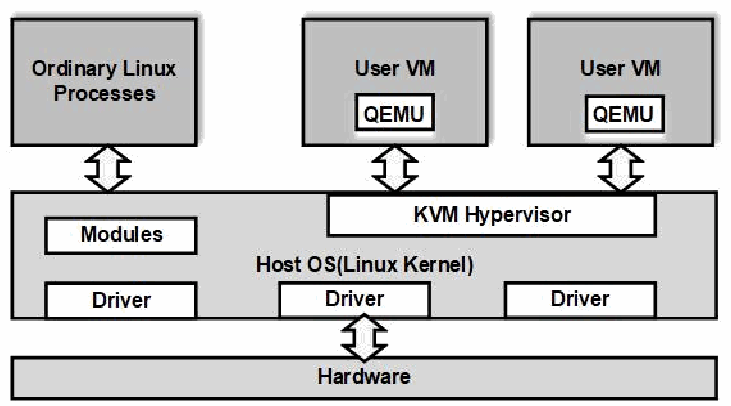

NIST IR 8221 日本語訳
英語タイトル : A Methodology for Enabling Forensic Analysis Using Hypervisor Vulnerabilities Data日本語タイトル : ハイパーバイザーの脆弱性データを用いたフォレンジック分析を可能にする方法論
公開日 : 2019-06-05
原文URL : https://csrc.nist.gov/pubs/ir/8221/final
翻訳編集 : 自動生成（有志による非公式の日本語訳）, 原文取得日 : 2026-10-31, 訳文 : 228 / 232 ブロック
[要約] NIST IR 8221 は、ハイパーバイザーの脆弱性に基づく攻撃を検知し、再構築し、防止するためのフォレンジック分析を可能にする方法論を示す報告書です。方法論を示すプラットフォームとして、オープンソースのハイパーバイザー Xen と KVM を選び、脆弱性データの出典には NIST の National Vulnerability Database（NVD）を用いています。脆弱性をハイパーバイザーの機能、攻撃の種類、攻撃元の観点で分類し、脆弱性の分布に基づいて 2 つのサンプル攻撃を実行して、関連するシステムコールを記録しています。攻撃を完全に検知し再構築するために必要な証拠データの不足を特定し、欠けている証拠を収集する手法をその後の攻撃の実行に組み込む、反復的なプロセスとすることを意図しています。
NISTIR 8221
NISTIR 8221
A Methodology for Enabling Forensic Analysis Using Hypervisor Vulnerabilities Data
ハイパーバイザーの脆弱性データを用いたフォレンジック分析を可能にする方法論
Ramaswamy Chandramouli
Anoop Singhal
Duminda Wijesekera
Changwei Liu
Ramaswamy Chandramouli
Anoop Singhal
Duminda Wijesekera
Changwei Liu
This publication is available free of charge from:
https://doi.org/10.6028/NIST.IR.8221
本刊行物は、次の場所から無料で入手できます:
https://doi.org/10.6028/NIST.IR.8221
［NIST のロゴ。公的な標章のため、この非公式サイトには掲載していません。原本 PDF を参照してください。］
NISTIR 8221
NISTIR 8221
A Methodology for Enabling Forensic Analysis Using Hypervisor Vulnerabilities Data
ハイパーバイザーの脆弱性データを用いたフォレンジック分析を可能にする方法論
Ramaswamy Chandramouli
Anoop Singhal
Duminda Wijesekera
Computer Security Division
Information Technology Laboratory
Ramaswamy Chandramouli
Anoop Singhal
Duminda Wijesekera
コンピュータセキュリティ部門
情報技術研究所
Changwei Liu
George Mason University
Fairfax, VA
Changwei Liu
ジョージ・メイソン大学
バージニア州フェアファックス
This publication is available free of charge from:
https://doi.org/10.6028/NIST.IR.8221
本刊行物は、次の場所から無料で入手できます:
https://doi.org/10.6028/NIST.IR.8221
June 2019
2019年6月
U.S. Department of Commerce
Wilbur L. Ross, Jr., Secretary
米国商務省
Wilbur L. Ross, Jr. 長官
National Institute of Standards and Technology
Walter Copan, NIST Director and Under Secretary of Commerce for Standards and Technology
国立標準技術研究所
Walter Copan、NIST 所長兼商務次官（標準・技術担当）
National Institute of Standards and Technology Interagency or Internal Report 8221
35 pages (June 2019)
国立標準技術研究所省庁間または内部報告書 8221
35ページ（2019年6月）
This publication is available free of charge from:
https://doi.org/10.6028/NIST.IR.8221
本刊行物は、次の場所から無料で入手できます:
https://doi.org/10.6028/NIST.IR.8221
Certain commercial entities, equipment, or materials may be identified in this document in order to describe an experimental procedure or concept adequately. Such identification is not intended to imply recommendation or endorsement by NIST, nor is it intended to imply that the entities, materials, or equipment are necessarily the best available for the purpose.
本文書では、実験手順や概念を適切に説明するために、特定の商業主体、機器、または資材を明示する場合があります。その明示は、NISTによる推奨または是認を意味するものではなく、また、それらの主体、機器、または資材が目的に最適であることを意味するものでもありません。
There may be references in this publication to other publications currently under development by NIST in accordance with its assigned statutory responsibilities. The information in this publication, including concepts and methodologies, may be used by federal agencies even before the completion of such companion publications. Thus, until each publication is completed, current requirements, guidelines, and procedures, where they exist, remain operative. For planning and transition purposes, federal agencies may wish to closely follow the development of these new publications by NIST.
本刊行物には、NIST が法令上の責務に従って現在策定中の他の刊行物への言及が含まれる場合があります。概念や方法論を含む本刊行物の情報は、そうした関連刊行物の完成前であっても、連邦政府機関によって利用される場合があります。したがって、各刊行物が完成するまでは、現行の要件、ガイドライン、手順が存在する場合には、それらが引き続き有効です。計画および移行のため、連邦機関は、NIST によるこれらの新しい刊行物の策定状況を注意深く追うことを検討してもよいです。
Organizations are encouraged to review all draft publications during public comment periods and provide feedback to NIST. Many NIST cybersecurity publications, other than the ones noted above, are available at https://csrc.nist.gov/publications.
組織は、パブリックコメント期間中にすべてのドラフト刊行物を確認し、NIST にフィードバックを提供することが推奨されています。上記以外の NIST のサイバーセキュリティ関連刊行物の多くは https://csrc.nist.gov/publications で入手できます。
Comments on this publication may be submitted to:
本刊行物に関するコメントの送付先は次のとおりです。
National Institute of Standards and Technology
Attn: Computer Security Division, Information Technology Laboratory
100 Bureau Drive (Mail Stop 8930) Gaithersburg, MD 20899-8930
Email: nistir8221@nist.gov
National Institute of Standards and Technology
Attn: Computer Security Division, Information Technology Laboratory
100 Bureau Drive (Mail Stop 8930) Gaithersburg, MD 20899-8930
Email: nistir8221@nist.gov
All comments are subject to release under the Freedom of Information Act (FOIA).
すべてのコメントは、情報自由法（FOIA）に基づいて公開される場合があります。
Reports on Computer Systems Technology
コンピュータシステム技術に関する報告書
The Information Technology Laboratory (ITL) at the National Institute of Standards and Technology (NIST) promotes the U.S. economy and public welfare by providing technical leadership for the Nation’s measurement and standards infrastructure. ITL develops tests, test methods, reference data, proof-of-concept implementations, and technical analyses to advance the development and productive use of information technology. ITL’s responsibilities include the development of management, administrative, technical, and physical standards and guidelines for the cost-effective security and privacy of other than national security-related information in federal information systems.
国立標準技術研究所（NIST）の情報技術ラボラトリー（ITL）は、国の測定・標準インフラに対する技術的リーダーシップを提供することで、米国の経済と公共の福祉を促進しています。ITL は、情報技術の発展と生産的な利用を進めるため、テスト、テスト方法、参照データ、概念実証の実装、技術的分析を開発しています。ITL の責務には、連邦情報システムにおける国家安全保障関連以外の情報の、費用対効果の高いセキュリティとプライバシーのための管理上、事務上、技術上、物理上の標準およびガイドラインの策定が含まれます。
Abstract
概要
Hardware/Server Virtualization is a foundational technology in a cloud computing environment and the hypervisor is the key software in that virtualized infrastructure. However, hypervisors are large pieces of software with several thousand lines of code and are therefore known to have vulnerabilities. Hence a capability to perform forensic analysis to detect, reconstruct and prevent attacks based on recent vulnerabilities on an ongoing basis is a critical requirement in cloud environments. The purpose of this document is to develop a methodology to enable this forensic analysis. Two open-source hypervisors—Xen and Kernel-based Virtual Machine (KVM)-were chosen as platforms to illustrate the methodology, and the source for vulnerability data is the National Institute of Standards and Technology’s National Vulnerability Database (NIST-NVD). The vulnerabilities were classified in terms of hypervisor functionality, attack type, and attack source. Based on the relative distribution of vulnerabilities in a hypervisor functionality, two sample attacks were launched to exploit vulnerabilities in the target hypervisor functionality, and the associated system calls were logged. The gaps in evidence data that is required for fully detecting and reconstructing those attacks are identified and techniques required to gather missing evidence are incorporated during subsequent attack runs. This is intended to be an iterative process.
ハードウェア／サーバー仮想化は、クラウドコンピューティング環境の基盤技術であり、ハイパーバイザーはその仮想化されたインフラストラクチャの中核となるソフトウェアです。しかし、ハイパーバイザーは数千行ものコードからなる大規模なソフトウェアであるため、脆弱性があることが知られています。そのため、最近の脆弱性に基づく攻撃を継続的に検知し、再現し、防止するためのフォレンジック分析を行う能力は、クラウド環境における重要な要件です。本書の目的は、このフォレンジック分析を可能にする方法論を策定することです。この方法論を示すためのプラットフォームとして、2つのオープンソースのハイパーバイザー（Xen と Kernel-based Virtual Machine（KVM））を選び、脆弱性データの出典には、米国国立標準技術研究所の National Vulnerability Database（NIST-NVD）を用いました。脆弱性は、ハイパーバイザーの機能、攻撃の種類、攻撃元の観点で分類しました。ハイパーバイザーの機能ごとの脆弱性の相対的な分布に基づいて、対象のハイパーバイザー機能の脆弱性を悪用する2つのサンプル攻撃を実行し、関連するシステムコールを記録しました。これらの攻撃を完全に検知し再現するために必要な証拠データの不足を特定し、不足する証拠を収集するために必要な技術を、その後の攻撃の実行で取り入れます。これは、反復的なプロセスとなることを意図しています。
Keywords
キーワード
cloud computing; forensic analysis; hypervisors; Kernel-based Virtual Machine (KVM); vulnerabilities; Xen
クラウドコンピューティング、フォレンジック分析、ハイパーバイザー、Kernel-based Virtual Machine（KVM）、脆弱性、Xen
Acknowledgments
謝辞
The authors thank Ms. Isabel Van Wyk for her valuable editorial review.
著者らは、Isabel Van Wyk 氏による貴重な編集上のレビューに感謝します。
Audience
対象読者
The target audience for this document includes security staff and Chief Information Security Officers (CISO) in virtualized infrastructures used for enterprise computing needs or for offering cloud services.
本書の対象読者には、エンタープライズコンピューティングのニーズのため、またはクラウドサービスを提供するために使用される仮想化インフラストラクチャにおける、セキュリティ担当者と最高情報セキュリティ責任者（CISO）が含まれます。
Trademark Information
商標情報
All registered trademarks or trademarks belong to their respective organizations.
登録商標または商標は、すべて各組織に帰属します。
Executive Summary
エグゼクティブサマリー
Server/Hardware Virtualization is now an established technology in cloud computing environments as it enables ubiquitous access to shared pools of system resources and high-level services provisioned with minimal management effort. The key enabling software of this technology is the hypervisor. This software layer lies between the physical hardware (called the hypervisor host) and multiple application workloads executing in Virtual Machines (VMs or guest machines). The hypervisor supports the guest machines by presenting to their operating systems (OSs) a virtual hardware platform and managing their execution.
サーバー／ハードウェア仮想化は、最小限の管理の手間で提供されるシステムリソースと高レベルサービスの共有プールへのユビキタスなアクセスを可能にするため、クラウドコンピューティング環境で確立された技術となっています。この技術を実現する中核のソフトウェアが、ハイパーバイザーです。このソフトウェア層は、物理ハードウェア（ハイパーバイザーホストと呼ばれます）と、仮想マシン（VM またはゲストマシン）上で実行される複数のアプリケーションワークロードとの間にあります。ハイパーバイザーは、ゲストマシンのオペレーティングシステム（OS）に仮想ハードウェアプラットフォームを提示し、その実行を管理することで、ゲストマシンを支えます。
However, hypervisors are large pieces of software with many lines of code and known vulnerabilities. Hence a capability to perform forensic analysis to detect, reconstruct and prevent attacks based on recent vulnerabilities on an ongoing basis is a critical requirement in cloud environments. The purpose of this document is to develop a methodology to enable this forensic analysis.
しかし、ハイパーバイザーは、多くのコード行からなり、既知の脆弱性を持つ大規模なソフトウェアです。そのため、最近の脆弱性に基づく攻撃を継続的に検知し、再構築し、防止するためのフォレンジック分析を行う能力は、クラウド環境における重要な要件です。本書の目的は、このフォレンジック分析を可能にする方法論を策定することです。
The first step of the methodology is to analyze the recent vulnerabilities and attacks on hypervisor products. Two open-source hypervisors - Xen and Kernel-based Virtual Machine (KVM)-were chosen as platforms to illustrate the methodology, and the source for vulnerability data is the National Institute of Standards and Technology’s National Vulnerability Database (NIST-NVD). The vulnerabilities were classified based on three categories – the hypervisor functionality where the vulnerability exists, attack type and attack source. The outcome of this step is to obtain the relative distribution of recent hypervisor vulnerabilities for the two products in the three categories.
この方法論の第1のステップは、ハイパーバイザー製品に対する最近の脆弱性と攻撃を分析することです。この方法論を示すためのプラットフォームとして、2つのオープンソースのハイパーバイザー（Xen と Kernel-based Virtual Machine（KVM））を選び、脆弱性データの出典には、米国国立標準技術研究所の National Vulnerability Database（NIST-NVD）を用いました。脆弱性は、脆弱性が存在するハイパーバイザーの機能、攻撃の種類、攻撃元の3つのカテゴリで分類しました。このステップの成果は、2つの製品について、最近のハイパーバイザーの脆弱性の3つのカテゴリにおける相対的な分布を得ることです。
The second step of the methodology is to identify the hypervisor functionality that is most impacted and to build sample attacks. These sample attacks were run for the chosen target hypervisor functionality, and the associated system calls were logged. The third step is an iterative process to determine the gaps in evidence data that is required for fully detecting and reconstructing those attacks and to identify techniques required to gather the needed evidence during subsequent attack runs.
この方法論の第2のステップは、最も影響を受けるハイパーバイザーの機能を特定し、模擬攻撃を構築することです。これらの模擬攻撃を、選択した対象のハイパーバイザー機能に対して実行し、関連するシステムコールを記録しました。第3のステップは、これらの攻撃を完全に検知し再現するために必要な証拠データの不足を判断し、その後の攻撃の実行で必要な証拠を収集するために必要な技術を特定する、反復的なプロセスです。
The intended benefit of the methodology is to enable all stakeholders (cloud providers and customers) to gain a better understanding of recent hypervisor vulnerabilities and attack trends, identify forensic information needed to reveal the presence of such attacks, and develop guidance on taking proactive steps to detect and prevent those attacks in their operating environments.
この方法論に期待される利点は、すべてのステークホルダー（クラウドプロバイダーと顧客）が、最近のハイパーバイザーの脆弱性と攻撃の傾向をよりよく理解し、そうした攻撃の存在を明らかにするために必要なフォレンジック情報を特定し、自らの運用環境でそれらの攻撃を検知し防止するための先手を打つ措置に関するガイダンスを策定できるようにすることです。
Table of Contents
目次
1 Introduction
1 はじめに
Most cloud services are provided through a virtualized infrastructure. Since virtualization of all system resources—including processors, memory, and Input/Output (I/O) devices—makes it possible to run multiple operating systems on a single physical platform (host), virtualization is a key technology in cloud computing environments that enables ubiquitous access to shared pools of system resources and high-level services provisioned with minimal management effort [1, 2]. An Operating System (OS) directly controls hardware resources in a non-virtualized system, but virtualization, typically performed by a hypervisor (also called a virtual machine monitor or VMM) [3] within a cloud environment, provides a mechanism that abstracts the hardware and system resources from an OS. As a software layer that lies between the physical hardware and the Virtual Machines (VMs or guest machines), a hypervisor supports the guest machines by presenting the guest OSs with a virtual operating platform and managing their execution.
ほとんどのクラウドサービスは、仮想化されたインフラストラクチャを通じて提供されます。プロセッサ、メモリ、入出力（I/O）デバイスを含むすべてのシステムリソースを仮想化することで、1つの物理プラットフォーム（ホスト）上で複数のオペレーティングシステムを実行できるようになるため、仮想化は、共有されたシステムリソースのプールへのユビキタスなアクセスと、最小限の管理の手間でプロビジョニングされるハイレベルなサービスを可能にする、クラウドコンピューティング環境の重要な技術です [1, 2]。非仮想化システムでは、オペレーティングシステム（OS）がハードウェアリソースを直接制御しますが、クラウド環境では、通常ハイパーバイザー（仮想マシンモニター、すなわち VMM とも呼ばれます）[3] によって行われる仮想化が、ハードウェアとシステムリソースを OS から抽象化する仕組みを提供します。物理ハードウェアと仮想マシン（VM またはゲストマシン）の間に位置するソフトウェア層として、ハイパーバイザーは、ゲスト OS に仮想的な動作プラットフォームを提示し、その実行を管理することでゲストマシンを支えます。
However, hypervisors are large pieces of software with many lines of code and known vulnerabilities [4]. While there is published research dedicated to characterizing and assessing hypervisor vulnerabilities as well as detecting and forensically analyzing the corresponding attacks [4-8], there is no formal methodology for enabling forensic analysis on open-source hypervisors, such as Kernel-based Virtual Machine (KVM) and Xen. Motivated by the work presented in [4], which characterized hypervisor vulnerabilities as of July 2012 with the objective of preventing their exploitation, this document considers the recent vulnerability reports associated with Xen and KVM in the NIST National Vulnerability Database (NIST-NVD). The objective is to analyze recent trends in hypervisor attacks, provide suggestions for mitigating hypervisor attack risks, and identify evidence of those attacks. The main contributions of this publication are as follows: (1) all vulnerabilities of the Xen and KVM hypervisor products from the 2016 and 2017 NIST National Vulnerability Database (NIST-NVD) were analyzed and classified based on their underlying functionalities, attack types, and sources of attacks; (2) classification of the above mentioned Xen and KVM hypervisor vulnerabilities based on three categories – hypervisor functionality, attack types and attack sources, and generating a relative distribution of the number of vulnerabilities (3) Use the previous data as the basis to develop sample attacks that exploit vulnerabilities in a target hypervisor functionality and run with system call logging capability, to identify coverage of the evidence needed for detecting, reconstructing and preventing these attacks.
しかし、ハイパーバイザーは、多くのコード行からなり、既知の脆弱性を持つ大規模なソフトウェアです [4]。ハイパーバイザーの脆弱性を特徴付けて評価し、対応する攻撃を検知してフォレンジック分析することに特化した研究は公表されていますが [4-8]、Kernel-based Virtual Machine（KVM）や Xen などのオープンソースのハイパーバイザーでフォレンジック分析を可能にするための正式な方法論はありません。2012年7月時点のハイパーバイザーの脆弱性を、その悪用を防ぐことを目的として特徴付けた [4] の研究に触発され、本書では、NIST National Vulnerability Database（NIST-NVD）にある Xen と KVM に関連する最近の脆弱性報告を取り上げます。目的は、ハイパーバイザーへの攻撃の最近の傾向を分析し、ハイパーバイザーへの攻撃のリスクを緩和するための提案を示し、それらの攻撃の証拠を特定することです。本刊行物の主な貢献は次のとおりです。(1) 2016年と2017年の NIST National Vulnerability Database（NIST-NVD）にある Xen と KVM のハイパーバイザー製品のすべての脆弱性を分析し、その基盤となる機能、攻撃の種類、攻撃元に基づいて分類したこと。(2) 上記の Xen と KVM のハイパーバイザーの脆弱性を、ハイパーバイザーの機能、攻撃の種類、攻撃元の3つのカテゴリに基づいて分類し、脆弱性件数の相対的な分布を作成したこと。(3) 前のデータを基礎として、対象のハイパーバイザー機能の脆弱性を悪用するサンプル攻撃を作成し、システムコールのログ記録機能を備えて実行することで、これらの攻撃を検知し、再構築し、防止するために必要な証拠の網羅範囲を特定したこと。
The rest of the publication is organized as follows. Section 2 presents an overview of hypervisor taxonomy and briefly describes the architecture of Xen and KVM hypervisor products as well as related work in the area of vulnerability/forensic analysis. Section 3 discusses the gathering of recent vulnerabilities in the two hypervisor products and the classification of those vulnerabilities in terms of hypervisor functionality, attack types and attack sources. Section 4 describes the sample attacks, information gathered in the initial log configuration, and discusses the gaps in forensic evidence that is required for fully detecting and reconstructing those attacks. Identification and discussion of techniques required to gather the needed evidence and the inclusion of those techniques in subsequent attack runs are also part of this section. Section 5 provides the summary and benefits.
本書の残りの構成は次のとおりです。2節では、ハイパーバイザーの分類の概要を示し、Xen と KVM のハイパーバイザー製品のアーキテクチャと、脆弱性・フォレンジック分析の分野の関連研究を簡潔に説明します。3節では、2つのハイパーバイザー製品の最近の脆弱性の収集と、それらの脆弱性のハイパーバイザーの機能、攻撃の種類、攻撃元による分類を論じます。4節では、サンプル攻撃、最初のログ設定で収集した情報を説明し、これらの攻撃を完全に検知し再構築するために必要なフォレンジック証拠の不足を論じます。必要な証拠を収集するための技術の特定と議論、およびその技術をその後の攻撃の実行に組み込むことも、この節に含まれます。5節では、まとめと利点を示します。
2 Technology Background and Related Work
2 技術的背景と関連研究
This section provides an overview of hypervisor taxonomy and briefly describes the various building blocks in the architecture of two open-source hypervisor products. It also summarizes related work in the area of hypervisor vulnerability/forensic analysis.
本節では、ハイパーバイザーの分類の概要を示し、2つのオープンソースのハイパーバイザー製品のアーキテクチャにおけるさまざまな構成要素を簡潔に説明します。また、ハイパーバイザーの脆弱性・フォレンジック分析の分野の関連研究もまとめます。
2.1 Hypervisors
2.1 ハイパーバイザー
Hypervisors are software and/or firmware modules that virtualize system resources such as the Central Processing Unit (CPU), memory, and devices. In [9], Popek and Goldberg classify hypervisors as Type 1 hypervisors and Type 2 hypervisors. Type 1 hypervisors run directly on the host’s hardware to control the hardware and manage guest operating systems (Guest OS). For this reason, Type 1 hypervisors are sometimes called bare metal hypervisors and include Xen, Microsoft Hyper-V, and VMware ESX/ESXi. Type 2 hypervisors are similar to other computer programs that run on an OS as a process. VMware Player, VirtualBox, Parallels Desktop for Mac, and Quick Emulator (QEMU) are Type 2 hypervisors. Some systems have features of both. For example, Linux's Kernel-based Virtual Machine (KVM) is a kernel module that effectively converts the host OS to a Type 1 hypervisor but is also categorized as a Type 2 hypervisor because Linux distributions are still general-purpose OSs with other applications competing for VM resources [10].
ハイパーバイザーは、中央処理装置（CPU）、メモリ、デバイスなどのシステムリソースを仮想化する、ソフトウェアまたはファームウェア（あるいはその両方）のモジュールです。Popek と Goldberg は [9] で、ハイパーバイザーをタイプ1ハイパーバイザーとタイプ2ハイパーバイザーに分類しています。タイプ1ハイパーバイザーは、ホストのハードウェア上で直接動作し、ハードウェアを制御してゲストオペレーティングシステム（ゲスト OS）を管理します。このため、タイプ1ハイパーバイザーはベアメタルハイパーバイザーと呼ばれることもあり、Xen、Microsoft Hyper-V、VMware ESX/ESXi が含まれます。タイプ2ハイパーバイザーは、OS 上でプロセスとして動作するほかのコンピュータープログラムに似ています。VMware Player、VirtualBox、Parallels Desktop for Mac、Quick Emulator（QEMU）は、タイプ2ハイパーバイザーです。両方の特徴を持つシステムもあります。たとえば、Linux の Kernel-based Virtual Machine（KVM）は、ホスト OS を実質的にタイプ1ハイパーバイザーに変えるカーネルモジュールですが、Linux ディストリビューションは依然として、ほかのアプリケーションが VM のリソースを奪い合う汎用 OS であるため、タイプ2ハイパーバイザーにも分類されます [10]。
According to the 2015 State of Hyperconverged Infrastructure Market Report by ActualTech media [23], there are four leading products in the hypervisor market: Microsoft Hyper-V, VMware VSphere/ESX, Citrix XenServer/Xen, and KVM. The first two - Microsoft Hyper-V and VMware VSphere/ESX are commercial products, while the last two are open-source products. These open-source products (i.e., Xen and KVM) were chosen as platforms for illustrating the methodology that forms the subject of this document. Their architectures are briefly discussed below.
ActualTech media による 2015 State of Hyperconverged Infrastructure Market Report [23] によると、ハイパーバイザー市場には、Microsoft Hyper-V、VMware VSphere/ESX、Citrix XenServer/Xen、KVM という4つの主要製品があります。最初の2つ、Microsoft Hyper-V と VMware VSphere/ESX は商用製品で、後の2つはオープンソース製品です。本書の主題である方法論を示すためのプラットフォームとして、これらのオープンソース製品（すなわち Xen と KVM）を選びました。それらのアーキテクチャを、以下で簡潔に説明します。
2.1.1 Xen
2.1.1 Xen
Figure 1 shows the architecture of Xen. In this design, the Xen hypervisor provides two types of domains – a single control domain (also called Domain0 or Dom0) and multiple guest domains (also called DomainU or DomU). Since the hypervisor supports two different virtualization modes, Paravirtualization (PV) and Hardware-assisted Virtualization (HVM) [11], a total of three different types of VMs – Domain0 VM (Dom0-VM), DomainU--PVM (DomU-PVM) and DomainU--HVM (DomU-HVM) can be hosted on the Xen platform. Dom0 is the initial domain started by the Xen hypervisor on booting up a privileged domain that plays the administrator role and supplies services for DomU VMs. For the two kinds of DomU guests, PV is a highly efficient and lightweight virtualization technology introduced by Xen in which Xen PV does not require virtualization extensions from the host hardware. Thus, PV enables virtualization on hardware architectures that do not support HVM, but it requires PV-enabled kernels and PV drivers to power a high performance virtual server. HVM requires hardware extensions, and Xen typically uses QEMU, a generic hardware emulator [15], for simulating PC hardware (e.g., CPU, Basic Input Output System (BIOS), Integrated Drive Electronics (IDE), Video Graphics Array (VGA), network cards, and Universal Serial Bus (USBs)). Because most I/O and network operations in HVM mode are done by using simulation technologies, performance of DomU-HVMs are inferior to DomU-PVMs[28]. Xen 4.4 provides a new virtualization mode named Para Virtualized Hardware (PVH). PVH guests are lightweight HVM-like guests that use virtualization extensions in the host hardware. Unlike HVM guests, instead of using QEMU to emulate devices, PVH guests use PV drivers for I/O and native OS interfaces for virtualized timers and virtualized interrupts. PVH guests require PVH-enabled guest OS [11].
図1は、Xen のアーキテクチャを示しています。この設計では、Xen ハイパーバイザーは、単一の制御ドメイン（Domain0 または Dom0 とも呼ばれます）と、複数のゲストドメイン（DomainU または DomU とも呼ばれます）という、2種類のドメインを提供します。このハイパーバイザーは、準仮想化（PV）とハードウェア支援仮想化（HVM）[11] という2つの異なる仮想化モードをサポートするため、Domain0 VM（Dom0-VM）、DomainU--PVM（DomU-PVM）、DomainU--HVM（DomU-HVM）という合計3種類の VM を、Xen プラットフォーム上でホストできます。Dom0 は、起動時に Xen ハイパーバイザーが開始する最初のドメインであり、管理者の役割を果たして DomU VM にサービスを提供する特権ドメインです。2種類の DomU ゲストのうち、PV は Xen が導入した、効率が高く軽量な仮想化技術で、Xen PV はホストハードウェアの仮想化拡張を必要としません。そのため、PV は HVM をサポートしないハードウェアアーキテクチャでも仮想化を可能にしますが、高性能な仮想サーバーを動かすには、PV 対応のカーネルと PV ドライバーが必要です。HVM にはハードウェア拡張が必要で、Xen は通常、汎用のハードウェアエミュレーターである QEMU [15] を使って、PC のハードウェア（たとえば、CPU、Basic Input Output System（BIOS）、Integrated Drive Electronics（IDE）、Video Graphics Array（VGA）、ネットワークカード、Universal Serial Bus（USB））をシミュレートします。HVM モードでは、I/O とネットワークの操作のほとんどがシミュレーション技術を使って行われるため、DomU-HVM の性能は DomU-PVM より低くなります [28]。Xen 4.4 は、Para Virtualized Hardware（PVH）という新しい仮想化モードを提供します。PVH ゲストは、ホストハードウェアの仮想化拡張を使用する、HVM に似た軽量のゲストです。HVM ゲストとは異なり、PVH ゲストは、デバイスのエミュレーションに QEMU を使う代わりに、I/O には PV ドライバーを、仮想化されたタイマーと仮想化された割り込みにはネイティブの OS インターフェースを使用します。PVH ゲストには、PVH 対応のゲスト OS が必要です [11]。
![Architecture diagram of Xen. Three VM columns are labeled "Domain0 VM", "DomainU--PVM" and "DomainU--HVM". Top row boxes: "Device Manager Control Software", "Unmodified User Applications", "Unmodified User Applications". Second row: "XenLinux" containing "Back-end Driver" with "Network" and "Block Dev", and "Native Driver"; "OS Kernel (Modified)" containing "Front-end Driver" with "Network" and "Block Dev"; "OS Kernel (Unmodified)" containing "Front-end Driver". Arrows connect the front-end drivers of both DomainU VMs to the back-end driver in XenLinux. Below is "Xen Hypervisor(VMM)" containing "Scheduler", "Timers", "Interrupts" and "Virtual MMU". An arrow runs from the Native Driver through the hypervisor to "Hardware(I/O, Physical Memory, CPUs)" at the bottom.](assets/ir-8221/p0010-figure-01.png)
Xen の構成図です。3 つの VM の列に「Domain0 VM」「DomainU--PVM」「DomainU--HVM」と表示されています。上段の箱は「Device Manager Control Software」「Unmodified User Applications」「Unmodified User Applications」です。2 段目は、「Back-end Driver」（「Network」「Block Dev」）と「Native Driver」を含む「XenLinux」、「Front-end Driver」（「Network」「Block Dev」）を含む「OS Kernel (Modified)」、「Front-end Driver」を含む「OS Kernel (Unmodified)」です。2 つの DomainU の Front-end Driver から XenLinux の Back-end Driver へ矢印が結ばれています。その下に「Scheduler」「Timers」「Interrupts」「Virtual MMU」を含む「Xen Hypervisor(VMM)」があり、Native Driver からハイパーバイザーを通って最下段の「Hardware(I/O, Physical Memory, CPUs)」へ矢印が延びています。
Figure 1: The Xen architecture
図1: Xen のアーキテクチャ
2.1.2 KVM
2.1.2 KVM
In the open-source hypervisor projects, the Kernel-based Virtual Machine (KVM) is a relatively new product which was first introduced in 2006 and soon merged into the Linux kernel (2.6.20). KVM is a full virtualization solution for Linux on x86 hardware containing virtualization extensions (Intel VT or AMD-V) where VMs run as normal Linux processes [12]. Figure 2 shows the KVM architecture, in which the KVM module uses QEMU to create guest VMs running as separate user processes. Because KVM is installed on top of the host OS, it is considered a Type 2 hypervisor. However, the KVM kernel module turns the Linux kernel into a Type 1 bare-metal hypervisor, providing the power and functionality of even the most complex and powerful Type 1 hypervisors.
オープンソースのハイパーバイザープロジェクトの中で、Kernel-based Virtual Machine（KVM）は比較的新しい製品で、2006年に初めて発表され、まもなく Linux カーネル（2.6.20）に統合されました。KVM は、仮想化拡張（Intel VT または AMD-V）を備えた x86 ハードウェア上の Linux 向けの完全仮想化ソリューションで、VM は通常の Linux プロセスとして動作します [12]。図2は、KVM のアーキテクチャを示しており、KVM モジュールは QEMU を使って、個別のユーザープロセスとして動作するゲスト VM を作成します。KVM はホスト OS の上にインストールされるため、タイプ2ハイパーバイザーと見なされます。ただし、KVM カーネルモジュールは Linux カーネルをタイプ1のベアメタルハイパーバイザーに変え、最も複雑で強力なタイプ1ハイパーバイザーに匹敵する能力と機能を提供します。

KVM の構成図です。上段に「Ordinary Linux Processes」と、それぞれ「QEMU」を含む 2 つの「User VM」があります。それぞれが両方向の矢印で「Host OS(Linux Kernel)」の層と結ばれ、この層には「KVM Hypervisor」「Modules」と 3 つの「Driver」があります。ホスト OS は両方向の矢印で最下段の「Hardware」と結ばれています。
Figure 2: The KVM architecture
図2: KVM のアーキテクチャ
2.2 Related Work
2.2 関連研究
Hypervisor attacks are categorized as external attacks and defined as exploits of the hypervisor's vulnerabilities which allow attackers to gain accessibility and authorization over the hypervisors [13]. In support of hypervisor defense, Perez-Botero et al. characterized Xen and KVM vulnerabilities based on hypervisor functionalities in 2012 [4]. However, these vulnerabilities cannot be used as the basis for characterizing many recent attacks. Using the NIST 800-115 security testing framework, Thongtua et al [5] assessed the vulnerabilities of widely used hypervisors, including VMware ESXi, Citrix XenServer, and KVM then performed some sample experiments in order to derive severity scores, and attack impacts. In an effort to develop hypervisor forensic methods, researchers discussed the attacks on hypervisors, their forensic mechanisms and challenges [8], and leveraged existing memory forensic techniques to perform forensic analysis on hypervisor attacks [7].
ハイパーバイザーへの攻撃は外部攻撃に分類され、攻撃者がハイパーバイザーへのアクセス権と認可を得られるようにする脆弱性の悪用と定義されます [13]。ハイパーバイザーの防御を支援するため、Perez-Botero らは2012年に、ハイパーバイザーの機能に基づいて Xen と KVM の脆弱性を特徴付けました [4]。しかし、これらの脆弱性を、最近の多くの攻撃を特徴付ける基礎として使うことはできません。Thongtua ら [5] は、NIST 800-115 セキュリティテストフレームワークを用いて、VMware ESXi、Citrix XenServer、KVM など広く使われているハイパーバイザーの脆弱性を評価し、その後、深刻度スコアと攻撃の影響を導き出すためにいくつかのサンプル実験を行いました。ハイパーバイザーのフォレンジック手法を開発する取り組みとして、研究者らはハイパーバイザーへの攻撃、そのフォレンジックの仕組み、課題を論じ [8]、既存のメモリフォレンジック技術を活用してハイパーバイザーへの攻撃をフォレンジック分析しました [7]。
3 Classification of Hypervisor Vulnerabilities
3 ハイパーバイザーの脆弱性の分類
This section describes the first step of our methodology which involves the collection of recent vulnerabilities in Xen and KVM hypervisor products and classifying them based on three categories-Hypervisor Functionality, Attack Types and Attack Sources.
本節では、本方法論の第1のステップについて説明します。このステップでは、Xen と KVM のハイパーバイザー製品の最近の脆弱性を収集し、ハイパーバイザーの機能、攻撃の種類、攻撃元という3つのカテゴリで分類します。
A brief description of the information sources that were used and the steps adopted as part of the approach for obtaining the relative distribution of vulnerabilities is given in Sections 3.1, 3.2, and 3.3.
使用した情報源と、脆弱性の相対的な分布を得るためのアプローチの一環として採用した手順の簡単な説明を、3.1節、3.2節、3.3節に示します。
3.1 The Hypervisor Vulnerabilities Data in the NIST-NVD
3.1 NIST-NVD にあるハイパーバイザーの脆弱性データ
The NIST-NVD is the U.S. government repository of standards-based vulnerability management data and includes databases of security checklist references, security-related software flaws, misconfigurations, product names, and impact metrics [14]. The first task of the first step is to obtain all vulnerabilities (tagged with Common Vulnerabilities and Exposures (CVE) numbers)) in two open-source hypervisors (Xen and KVM) from the NIST-NVD for the years 2016 and 2017.
NIST-NVD は、標準に基づく脆弱性管理データを集めた米国政府のリポジトリであり、セキュリティチェックリストの参照情報、セキュリティ関連のソフトウェアの欠陥、構成の誤り、製品名、影響の指標のデータベースを含んでいます [14]。第1のステップの最初の作業は、2つのオープンソースのハイパーバイザー（Xen と KVM）について、2016年と2017年のすべての脆弱性（Common Vulnerabilities and Exposures（CVE）番号が付けられたもの）を NIST-NVD から取得することです。
As listed in Appendix A, a search of the NIST-NVD for the vulnerabilities based on keyword “Xen” and “KVM” posted during the years 2016 and 2017 revealed 83 Xen hypervisor vulnerabilities and 20 KVM hypervisor vulnerabilities. These vulnerabilities were then classified based on the following three categories:
付録Aに示すとおり、2016年と2017年に掲載された脆弱性を、NIST-NVD でキーワード「Xen」と「KVM」により検索したところ、Xen ハイパーバイザーの脆弱性が83件、KVM ハイパーバイザーの脆弱性が20件見つかりました。これらの脆弱性を、次の3つのカテゴリで分類しました。
•Hypervisor Functionality where the vulnerability exists (attack vector channel)
•脆弱性が存在するハイパーバイザーの機能（攻撃ベクトルのチャネル）
•Attack Type (impact of the attack by exploiting the vulnerability)
•攻撃の種類（脆弱性を悪用する攻撃の影響）
•Attack Source (users in different virtualization component levels (e.g., guest OS, host OS or hypervisor) and different privilege levels (e.g., user, administrator) who can launch attacks if malicious)).
•攻撃元（悪意がある場合に攻撃を仕掛けうる、仮想化の構成要素の異なる階層（たとえば、ゲスト OS、ホスト OS、ハイパーバイザー）と、異なる権限レベル（たとえば、一般利用者、管理者）の利用者）。
3.2 Classifying Vulnerabilities Based on Hypervisor Functionality
3.2 ハイパーバイザーの機能に基づく脆弱性の分類
To obtain a better understanding of different hypervisor vulnerabilities in terms of impacted hypervisor functions, Perez-Botero et al. considered 11 basic functionalities that a traditional hypervisor provides and mapped vulnerabilities to them [4]. These functionalities include:
影響を受けるハイパーバイザーの機能の観点から、さまざまなハイパーバイザーの脆弱性をよりよく理解するため、Perez-Botero らは、従来のハイパーバイザーが提供する11の基本機能を考え、脆弱性をそれらに対応付けました [4]。これらの機能には、次のものがあります。
1.Virtual CPUs (vCPU)
1.仮想 CPU（vCPU）
2.Symmetric Multiprocessing (VSMP)
2.対称型マルチプロセッシング（VSMP）
3.Soft Memory Management Unit (MMU)
3.ソフトメモリ管理ユニット（MMU）
4.I/O and Networking
4.I/O とネットワーキング
5.Paravirtualized I/O
5.準仮想化 I/O
6.Interrupt and Timer mechanisms
6.割り込みとタイマーの仕組み
7.Hypercalls
7.ハイパーコール
8.VMExit
8.VMExit
9.VM Management
9.VM 管理
10.Remote Management Software
10.リモート管理ソフトウェア
11.Hypervisor Add-ons
11.ハイパーバイザーのアドオン
In the approach adopted in this document, we used the above 11 functions in a slightly modified way. The functionalities 4 and 5 were merged into a single functionality based on the fact that they both pertain to I/O. (A detailed description of all these functionalities can be found in Appendix B). All reported Xen and KVM vulnerabilities during the years 2016 and 2017 were mapped to these hypervisor functionalities based on the approach in [4], which are listed in Appendix A. A brief description of sample vulnerabilities associated with functionalities is given in Table 1:
本書で採用したアプローチでは、上記の11の機能をわずかに修正して用いました。機能4と機能5は、どちらも I/O に関係するという事実に基づいて、1つの機能にまとめました。（これらすべての機能の詳しい説明は、付録Bにあります。）2016年と2017年に報告された Xen と KVM のすべての脆弱性を、[4] のアプローチに基づいてこれらのハイパーバイザーの機能に対応付け、付録Aに示しています。機能に関連する脆弱性のサンプルの簡単な説明を、表1に示します。
Table 1: A sample vulnerability for each hypervisor functionality
表1: ハイパーバイザーの機能ごとの脆弱性のサンプル
| Hypervisor Functionality | Sample Vulnerability |
|---|---|
| vCPU | CVE-2017-10923 is an example of vCPU vulnerability in which Xen through 4.8.x does not validate a vCPU array index upon sending a software generated interrupt (SGI), which allows a guest OS user to cause a denial-of-service (DoS) attack, finally resulting in crashing the hypervisor. |
| VSMP | NONE |
| Soft MMU | An example of soft MMU vulnerability is CVE-2017-17565, which existed up to Xen version 4.9.x. Due to an incorrect assertion related to machine-to- people (M2P), this vulnerability allows a paravirtualized guest OS user to cause a DoS attack when both the shadow mode and log-dirty mode are set up and working. |
| I/O and Networking | CVE-2017-15589 is an example of an I/O and networking vulnerability discovered in Xen versions through 4.9.x which allows x86 HVM guest OS users to obtain sensitive information from the host OS (or an arbitrary guest OS). In these versions of Xen, at least one write path was found wherein the data that had been stored in an internal structure could contain bits from an uninitialized hypervisor stack slot. A subsequent emulated read would retrieve these bits. |
| Interrupt/Timer | CVE-2018-7542 is an example of an interrupt/timer vulnerability caused by leveraging the mishandling of configurations that lack a local Advanced Programmable Interrupt Controller (APIC). It was discovered in Xen 4.8.x through 4.10.x. This vulnerability allows an x86 PVH guest OS user to cause a DoS attack (a NULL pointer dereference and hypervisor crash). |
| Hypercalls | An example of hypercall vulnerability is CVE-2017-8903, which is reported through Xen 4.8.x on 64-bit platforms that might allow a PV guest OS user to execute arbitrary code on the host OS by mishandling page tables after an IRET hypercall. |
| VMExit | The exploit of a VM Exit-handling code usually leads to a DoS attack. An example of a VMExit vulnerability is CVE-2017-2596, in which the “nested_vmx_check_vmptr” function in arch/x86/kvm/vmx.c in the Linux kernel through 4.9.8 improperly emulates the VMXON instruction that puts the processor in Virtual Machine Extensions (VMX) root mode. This then allows a KVM L1 guest OS user to cause a DoS attack (the host OS memory consumption) by leveraging the mishandling of page references. |
| VM Management | CVE-2016-4963 is an example vulnerability of VM management. The libxl device-handling in Xen through 4.6.x allows local guest OS users access to the driver domain to cause a denial of service (management tool confusion) by manipulating information in the backend directories in xenstore. |
| Remote Management Software | The exploit of the management functionality may allow a host compromise. An example of VM management functionality vulnerability is CVE-2016-5302. When a deployment has been upgraded from an earlier release, XenServer 7.0 before the vendor's Hot x XS70E003 may allow a remote attacker on the management network to compromise a host by leveraging credentials for an active directory account. |
| Hypervisor Add-ons | CVE-2016-0749 is an example vulnerability of hypervisor add-ons. By leveraging the smartcard interaction in Simple Protocol for Independent Computing Environments (SPICE) as KVM add-ons, a remote attacker can cause a DoS attack (QEMU-KVM process crash) or possibly execute arbitrary code via vectors related to connecting to a guest VM, which triggers a heap-based buffer overflow. |
| ハイパーバイザーの機能 | 脆弱性のサンプル |
|---|---|
| vCPU | CVE-2017-10923 は vCPU の脆弱性の例で、Xen 4.8.x までのバージョンが、ソフトウェア生成割り込み（SGI）の送信時に vCPU 配列のインデックスを検証しないため、ゲスト OS の利用者がサービス拒否（DoS）攻撃を引き起こすことができ、最終的にハイパーバイザーがクラッシュします。 |
| VSMP | なし |
| Soft MMU | ソフト MMU の脆弱性の例は CVE-2017-17565 で、Xen バージョン 4.9.x まで存在していました。machine-to-people（M2P）に関連する不正なアサーションにより、この脆弱性は、シャドウモードとログダーティモードの両方が設定され動作しているときに、準仮想化されたゲスト OS の利用者が DoS 攻撃を引き起こすことを可能にします。 |
| I/O とネットワーキング | CVE-2017-15589 は、Xen 4.9.x までのバージョンで発見された I/O とネットワーキングの脆弱性の例で、x86 HVM のゲスト OS の利用者が、ホスト OS（または任意のゲスト OS）から機微な情報を取得できるようにします。これらのバージョンの Xen では、内部構造体に格納されたデータに、初期化されていないハイパーバイザーのスタックスロットのビットが含まれうる書き込み経路が、少なくとも1つ見つかりました。その後のエミュレートされた読み取りで、これらのビットが取得されます。 |
| 割り込み／タイマー | CVE-2018-7542 は、ローカルの Advanced Programmable Interrupt Controller（APIC）を持たない構成の不適切な処理を悪用することで生じる、割り込み／タイマーの脆弱性の例です。Xen 4.8.x から 4.10.x で発見されました。この脆弱性により、x86 PVH のゲスト OS の利用者が、DoS 攻撃（NULL ポインターの参照外しとハイパーバイザーのクラッシュ）を引き起こすことができます。 |
| ハイパーコール | ハイパーコールの脆弱性の例は CVE-2017-8903 で、64ビットプラットフォーム上の Xen 4.8.x までのバージョンで報告されており、IRET ハイパーコールの後のページテーブルの不適切な処理により、PV のゲスト OS の利用者が、ホスト OS 上で任意のコードを実行できる可能性があります。 |
| VMExit | VM Exit の処理コードの悪用は、通常、DoS 攻撃につながります。VMExit の脆弱性の例は CVE-2017-2596 で、Linux カーネル 4.9.8 までの arch/x86/kvm/vmx.c にある「nested |
| VM 管理 | CVE-2016-4963 は、VM 管理の脆弱性の例です。Xen 4.6.x までのバージョンの libxl のデバイス処理により、ドライバードメインにアクセスできるローカルのゲスト OS の利用者が、xenstore のバックエンドディレクトリにある情報を操作して、サービス拒否（管理ツールの混乱）を引き起こすことができます。 |
| リモート管理ソフトウェア | 管理機能の悪用は、ホストの危殆化を許す可能性があります。VM 管理機能の脆弱性の例は CVE-2016-5302 です。以前のリリースからアップグレードされた環境では、ベンダーの Hotfix XS70E003 より前の XenServer 7.0 において、管理ネットワーク上のリモートの攻撃者が、Active Directory アカウントの認証情報を悪用してホストを危殆化させる可能性があります。 |
| ハイパーバイザーのアドオン | CVE-2016-0749 は、ハイパーバイザーのアドオンの脆弱性の例です。KVM のアドオンである Simple Protocol for Independent Computing Environments（SPICE）のスマートカード連携を悪用することで、リモートの攻撃者は、ゲスト VM への接続に関連する攻撃経路を介して、ヒープベースのバッファオーバーフローを引き起こし、DoS 攻撃（QEMU-KVM プロセスのクラッシュ）を引き起こすか、または場合によっては任意のコードを実行できます。 |
3.3 Obtaining Relative Distribution of Vulnerabilities
3.3 脆弱性の相対的な分布の取得
After tagging each vulnerability with the three categories listed above, the number of vulnerabilities were summarized for each category and percentages of occurrence within each category were computed to obtain their relative distribution.
上記の3つのカテゴリで各脆弱性にタグを付けた後、カテゴリごとに脆弱性の件数を集計し、各カテゴリ内での発生割合を算出して、それらの相対的な分布を得ました。
Table 2: The vulnerabilities of Xen and KVM classified by hypervisor functionality
表2: ハイパーバイザーの機能別に分類した Xen と KVM の脆弱性
| Number | Hypervisor Functionality | Xen (Number & Percentage of the Total) | KVM (Number & Percentage of the Total) |
|---|---|---|---|
| 1 | vCPU | 6 (7 %) | 4 (20 %) |
| 2 | VSMP | 0 (0 %) | 0 (0 %) |
| 3 | Soft MMU | 34 (40 %) | 5 (25 %) |
| 4 | I/O and Networking | 24 (29 %) Five are fully-virtualized; 19 are paravirtualized; none are direct access or self-virtualized. | 4 (20 %) All are fully-virtualized. |
| 5 | Interrupt/Timer | 7 (8 %) | 3 (15 %) |
| 6 | Hypercalls | 3 (4 %) | 1 (5 %) |
| 7 | VMExit | 1 (1 %) | 2 (10 %) |
| 8 | VM Management | 7 (8 %) | 0 (0 %) |
| 9 | Remote Management Software | 1 (0 %) | 0 (0 %) |
| 10 | Hypervisor Add-ons | 0 (0 %) | 1 (5 %) |
| 番号 | ハイパーバイザーの機能 | Xen（件数と全体に占める割合） | KVM（件数と全体に占める割合） |
|---|---|---|---|
| 1 | vCPU | 6 (7 %) | 4 (20 %) |
| 2 | VSMP | 0 (0 %) | 0 (0 %) |
| 3 | Soft MMU | 34 (40 %) | 5 (25 %) |
| 4 | I/O とネットワーキング | 24 (29 %) 5件は完全仮想化、19件は準仮想化で、ダイレクトアクセスまたは自己仮想化のものはありません。 | 4 (20 %) すべて完全仮想化です。 |
| 5 | 割り込み／タイマー | 7 (8 %) | 3 (15 %) |
| 6 | ハイパーコール | 3 (4 %) | 1 (5 %) |
| 7 | VMExit | 1 (1 %) | 2 (10 %) |
| 8 | VM 管理 | 7 (8 %) | 0 (0 %) |
| 9 | リモート管理ソフトウェア | 1 (0 %) | 0 (0 %) |
| 10 | ハイパーバイザーのアドオン | 0 (0 %) | 1 (5 %) |
Classifications based on the hypervisor functionalities are shown in Table 2. With the exception of the functionality of virtual symmetric multiprocessing, all functionalities were reported as having vulnerabilities. The number of vulnerabilities and the percentages within each hypervisor offering are listed. The table reveals that there are more reported Xen vulnerabilities than KVM. One of the reasons can be attributed to a broader user base for Xen. Furthermore, approximately 69 % of the vulnerabilities in Xen and 45 % of the vulnerabilities in KVM are concentrated in two functionalities—Soft MMU and I/O and Networking. A detailed reading of CVE reports reveals that these vulnerabilities primarily originated in page tables and I/O grant table emulation. Additionally, the vulnerabilities based on the I/O and Networking functionality were also associated with each of the four types of I/O virtualization: (1) fully virtualized devices, (2) paravirtualized devices, (3) direct access devices, and (4) self-virtualized devices. Table 2 shows that most of the I/O and networking vulnerabilities in Xen came from paravirtualized devices, while all I/O and networking vulnerabilities in KVM came from fully-virtualized devices. This is due to the fact that in most Xen deployments, I/O and networking functionality is configured using a paravirtualized device, while in KVM, that functionality is configured using a fully virtualized device.
ハイパーバイザーの機能に基づく分類を、表2に示します。仮想対称型マルチプロセッシングの機能を除き、すべての機能に脆弱性が報告されています。脆弱性の件数と、各ハイパーバイザー製品内での割合を掲載しています。この表から、Xen の方が KVM よりも多くの脆弱性が報告されていることがわかります。その理由の1つとして、Xen の方が利用者層が広いことが考えられます。さらに、Xen の脆弱性の約69 %、KVM の脆弱性の45 %が、ソフト MMU と I/O とネットワーキングの2つの機能に集中しています。CVE の報告を詳しく読むと、これらの脆弱性は主に、ページテーブルと I/O グラントテーブルのエミュレーションに由来することがわかります。加えて、I/O とネットワーキングの機能に基づく脆弱性は、I/O 仮想化の4つの種類、すなわち (1) 完全仮想化デバイス、(2) 準仮想化デバイス、(3) ダイレクトアクセスデバイス、(4) 自己仮想化デバイスのそれぞれにも関連していました。表2は、Xen の I/O とネットワーキングの脆弱性のほとんどが準仮想化デバイスに由来し、KVM の I/O とネットワーキングの脆弱性はすべて完全仮想化デバイスに由来することを示しています。これは、ほとんどの Xen の環境では、I/O とネットワーキングの機能が準仮想化デバイスを使って構成されるのに対し、KVM では、その機能が完全仮想化デバイスを使って構成されるためです。
Table 3: The types of attacks caused by Xen and KVM vulnerabilities
表3: Xen と KVM の脆弱性による攻撃の種類
| Type of Attack | Xen (Number & Percentage of the Total) | KVM (Number & Percentage of the Total) |
|---|---|---|
| Denial-of-service (DoS) | 48 (four have other impacts) (44 %) | 17 (three have other impacts) (63 %) |
| Privilege escalation | 33 (16 have other impacts) (30 %) | 3 (two have other impacts) (11 %) |
| Information leakage | 15 (five have other impacts) (14 %) | 5 (19 %) |
| Arbitrary code execution | 8 (two have other impacts) (7 %) | 2 (all have other impacts) (7 %) |
| Reading/ | 3 (3 %) | 0 (0 %) |
| Others including compromising a host, canceling other administrators’ operations and corrupting data | 3 (3 %) | 0 (0 %) |
| 攻撃の種類 | Xen（件数と全体に占める割合） | KVM（件数と全体に占める割合） |
|---|---|---|
| サービス拒否（DoS） | 48（4件はほかの影響もあり）（44 %） | 17（3件はほかの影響もあり）（63 %） |
| 権限昇格 | 33（16件はほかの影響もあり）（30 %） | 3（2件はほかの影響もあり）（11 %） |
| 情報漏えい | 15（5件はほかの影響もあり）（14 %） | 5 (19 %) |
| 任意のコード実行 | 8（2件はほかの影響もあり）（7 %） | 2（すべてほかの影響もあり）（7 %） |
| ファイルの読み取り・変更・削除 | 3 (3 %) | 0 (0 %) |
| ホストの危殆化、ほかの管理者の操作の取り消し、データの破損などのその他 | 3 (3 %) | 0 (0 %) |
Classifications based on the attack types and the sources of attacks are listed in Table 3 and Table 4, respectively. Table 3 reveals that the most common attack type was DoS (44 % for Xen and 63 % for KVM), indicating that attacking cloud services' availability could be a serious cloud security problem. The other top attacks were privilege escalation (30 % for Xen and 11 % for KVM), information leakage (14 % for Xen and 19 % for KVM), and arbitrary code execution (7 % for Xen and 7 % for KVM). Although each of these thre;e attacks occurs with less frequency than a DoS attack, they all carry the potential risk of either leaking sensitive user information or compromising the hosts or guest VMs. Table 4 shows that the greatest source of all attacks was guest OS users (76 % for Xen and 85 % for KVM). This suggests that cloud providers must closely monitor guest users' activities in order to reduce attack risks.
攻撃の種類と攻撃元に基づく分類を、それぞれ表3と表4に示します。表3から、最も一般的な攻撃の種類は DoS（Xen は44 %、KVM は63 %）であることがわかり、クラウドサービスの可用性への攻撃が、クラウドセキュリティ上の深刻な問題となりうることを示しています。そのほかの上位の攻撃は、権限昇格（Xen は30 %、KVM は11 %）、情報漏えい（Xen は14 %、KVM は19 %）、任意のコード実行（Xen は7 %、KVM は7 %）でした。これら3種類の攻撃はいずれも、DoS 攻撃より発生頻度は低いものの、利用者の機微な情報を漏えいさせたり、ホストやゲスト VM を危殆化させたりする潜在的なリスクを伴います。表4から、すべての攻撃の最大の攻撃元は、ゲスト OS の利用者（Xen は76 %、KVM は85 %）であることがわかります。このことは、クラウドプロバイダーが、攻撃のリスクを減らすために、ゲスト利用者の活動を注意深く監視する必要があることを示しています。
Table 4: Attack Sources and Number of Exploits
表4: 攻撃元と悪用の件数
| Source of Attack | Xen (Number & Percentage of the Total) | KVM (Number & Percentage of the Total) |
|---|---|---|
| Administrator | 2 (Management) (2 %) | 0 (0 %) |
| Guest OS administrator | 17 (including HVM and PV administrators) (20 %) | 1 (5 %) |
| Guest OS user | 63 (including Advanced RISC Machine (ARM), X86, HVM and PV users) (76 %) | 17 (including KVM L1, L2, and privileged users) (85 %) |
| Remote attacker | 1 (1 %) | 1 (including an authenticated remote guest user) (5 %) |
| Host OS user | 0 (0 %) | 1 (5 %) |
| 攻撃元 | Xen（件数と全体に占める割合） | KVM（件数と全体に占める割合） |
|---|---|---|
| 管理者 | 2（管理）（2 %） | 0 (0 %) |
| ゲスト OS の管理者 | 17（HVM と PV の管理者を含む）（20 %） | 1 (5 %) |
| ゲスト OS の利用者 | 63（Advanced RISC Machine（ARM）、X86、HVM、PV の利用者を含む）（76 %） | 17（KVM L1、L2、特権利用者を含む）（85 %） |
| リモートの攻撃者 | 1 (1 %) | 1（認証されたリモートのゲスト利用者を含む）（5 %） |
| ホスト OS の利用者 | 0 (0 %) | 1 (5 %) |
4 Sample Attacks and Forensic Analysis
4 サンプル攻撃とフォレンジック分析
The second step of the methodology is to identify the hypervisor functionality that is most impacted by the vulnerabilities (from relative distribution) and use that as the basis to build sample attacks. Since numerous vulnerabilities are related to the Xen soft MMU functionality, this section illustrates two sample attacks that exploit vulnerabilities in this functionality, CVE-2017-7228 and CVE-2016-6258, to demonstrate how the requisite evidence for detecting and reconstructing hypervisor attacks is determined.
この方法論の第2のステップは、（相対的な分布から）脆弱性の影響を最も受けるハイパーバイザーの機能を特定し、それを基礎としてサンプル攻撃を構築することです。Xen のソフト MMU の機能に関連する脆弱性が多数あるため、本節では、この機能の脆弱性を悪用する2つのサンプル攻撃、CVE-2017-7228 と CVE-2016-6258 を示し、ハイパーバイザーへの攻撃を検知し再構築するために必要な証拠をどのように判断するかを例示します。
4.1 The Two Sample Attacks
4.1 2つのサンプル攻撃
As presented in Section 2.1.1., the Xen hypervisor can host three types of VMs, Dom0-VM, DomU-PVM and DomU-HVM. The PV module in the hypervisor that implements PV mode and supports DomU-PVMs has been widely utilized for its higher performance [25]. However, since this module uses complex code to emulate the MMU, it introduces many vulnerabilities, such as CVE-2017-7228 and CVE-2016-6258.
2.1.1節で示したように、Xen ハイパーバイザーは、Dom0-VM、DomU-PVM、DomU-HVM という3種類の VM をホストできます。PV モードを実装し DomU-PVM を支えるハイパーバイザー内の PV モジュールは、性能が高いため広く利用されてきました [25]。しかし、このモジュールは MMU をエミュレートするために複雑なコードを使用しているため、CVE-2017-7228 や CVE-2016-6258 など、多くの脆弱性を生んでいます。
Known by Xen as XSA-212, CVE-2017-7228 was first reported by Jann Horn of Google’s Project Zero in 2017 [20]. Horn discovered that this vulnerability in X86 64 bit Xen (including 4.8.x, 4.7.x, 4.6.x, 4.5.x, and 4.4.x versions) was caused by an insufficient check on the function “XENMEM_exchange”, which allows the PV guest user as the function caller to access hypervisor memory outside of the PV guest VM’s provisioned memory. Therefore, a malicious 64-bit PV guest who can make a hypercall “HYPERVISOR_memory_op” function to invoke the “XENMEM_exchange” function may be able to access all of a system’s memory. The consequent VM escape from DomU to Dom0 (the process of breaking out of a guest VM and interacting with the hypervisor’s host operating system) can enable the PV guest user to cause hypervisor host crash and information leakage. The resulting increase in privilege can also enable the malicious PV guest user to execute commands like “qvm-run victim firefox" to open a Firefox web-browser in the “victim” guest VM, which can only be executed by Dom0 as shown in Figure 3.
Xen では XSA-212 として知られる CVE-2017-7228 は、2017年に Google の Project Zero の Jann Horn によって最初に報告されました [20]。Horn は、X86 64ビット版 Xen（4.8.x、4.7.x、4.6.x、4.5.x、4.4.x のバージョンを含む）のこの脆弱性が、関数「XENMEM_exchange」の不十分なチェックによって生じることを発見しました。これにより、関数の呼び出し元である PV ゲストの利用者が、PV ゲスト VM に割り当てられたメモリの外にあるハイパーバイザーのメモリにアクセスできます。したがって、「XENMEM_exchange」関数を呼び出すためにハイパーコール「HYPERVISOR_memory_op」関数を実行できる悪意のある64ビットの PV ゲストは、システムのメモリ全体にアクセスできる可能性があります。その結果生じる DomU から Dom0 への VM エスケープ（ゲスト VM から抜け出し、ハイパーバイザーのホストオペレーティングシステムと相互作用するプロセス）により、PV ゲストの利用者は、ハイパーバイザーのホストのクラッシュと情報漏えいを引き起こせるようになります。権限が上昇する結果、悪意のある PV ゲストの利用者は、図3に示すように、Dom0 しか実行できない「qvm-run victim firefox」のようなコマンドを実行して、「victim」ゲスト VM で Firefox ウェブブラウザーを開くこともできます。
CVE-2016-6258 is also known as XSA-182, which was reported by Jeremie Boutoille from Quarklab in 2016 [21]. In the PV module, page tables are used to map pseudo-physical/physical addresses seen by the guest VM to the underlying memory of the machine. Since there is a vulnerability in Xen PV page tables that allows updates to be made to pre-existing page table entries, the malicious PV guests can access the page directory with an updated write privilege to execute the VM escape, breaking out of DomU to control Dom 0.
CVE-2016-6258 は XSA-182 としても知られ、2016年に Quarklab の Jeremie Boutoille によって報告されました [21]。PV モジュールでは、ページテーブルが、ゲスト VM から見える疑似物理／物理アドレスを、マシンの基盤となるメモリに対応付けるために使われます。Xen の PV ページテーブルには、既存のページテーブルエントリーに更新を加えることを許す脆弱性があるため、悪意のある PV ゲストは、更新された書き込み権限を持つページディレクトリにアクセスして VM エスケープを実行し、DomU から抜け出して Dom0 を制御できます。
Both types of attacks were launched on the PV module configured in Qubes 3.1 with Xen 4.6 [22]. As illustrated in Figure 3, the attacker impersonating the PV guest root user could execute a command, “qvm-run victim firefox,” that can only be executed by Dom0 to open the victim PV guest’s Firefox web browser. Both attacks allowed the PV guest users to gain the control of Dom0.
どちらの種類の攻撃も、Xen 4.6 を搭載した Qubes 3.1 [22] で構成した PV モジュールに対して実行しました。図3に示すように、PV ゲストの root 利用者になりすました攻撃者は、Dom0 しか実行できないコマンド「qvm-run victim firefox」を実行して、被害側の PV ゲストの Firefox ウェブブラウザーを開くことができました。どちらの攻撃でも、PV ゲストの利用者が Dom0 の制御を得ることができました。
［第三者の画像。第三者の著作物のため、この非公式サイトには掲載していません。原本 PDF を参照してください。］
Figure 3: CVE-2017-7228 and CVE-2016-6258 Attacks
図3: CVE-2017-7228 と CVE-2016-6258 の攻撃
4.2 Identifying Evidence Coverage for Forensic Analysis
4.2 フォレンジック分析のための証拠の網羅範囲の特定
The subsection describes the third step of our methodology that seeks to determine the gaps in evidence data that is required for fully detecting and reconstructing those attacks and to identify techniques required to gather missing evidence during subsequent attack runs. Towards this goal, the analysis of existing evidence was conducted as follows:
本項では、本方法論の第3のステップについて説明します。このステップでは、これらの攻撃を完全に検知し再構築するために必要な証拠データの不足を判断し、その後の攻撃の実行で不足する証拠を収集するために必要な技術を特定することを目指します。この目標に向けて、既存の証拠の分析を次のように実施しました。
It has been observed that both attacks used vulnerabilities related to hypercalls and soft MMU in Xen in addition to using Xen’s device activity logs. The affected processes’ runtime syscalls were therefore logged to perform a forensic analysis. As an example, Appendix C illustrates the syscalls obtained by using the “strace” Linux command on the running “attack” program of CVE-2017-7228. Analysis of the device activity logs and runtime syscalls showed the relevant evidence originated from the syscalls captured from the attackers’ VMs. Despite the noise among syscalls that can be found in most programs, other syscalls revealed that the attack program injected a loadable kernel module into the kernel space which exploited the vulnerability to control the Dom0. This then opened the Firefox browser in the victim’s guest VM.
どちらの攻撃も、Xen のデバイス活動ログを利用することに加えて、Xen のハイパーコールとソフト MMU に関連する脆弱性を利用していたことが確認されました。そのため、フォレンジック分析を行うために、影響を受けたプロセスの実行時のシステムコールを記録しました。一例として、付録Cに、CVE-2017-7228 の実行中の「attack」プログラムに対して Linux コマンド「strace」を使って得られたシステムコールを示します。デバイス活動ログと実行時のシステムコールを分析した結果、関連する証拠は、攻撃者の VM から取得したシステムコールに由来することがわかりました。ほとんどのプログラムで見られるシステムコール中のノイズがあるものの、ほかのシステムコールからは、攻撃プログラムが、脆弱性を悪用して Dom0 を制御するロード可能カーネルモジュールを、カーネル空間に注入したことが明らかになりました。その結果、被害側のゲスト VM で Firefox ブラウザーが開かれました。
Evidence acquisition plays an important role in forensic analysis by determining and reconstructing attacks. As presented in a previous work which illustrated the use of a layered graphical framework to reconstruct attack scenarios [24], relevant evidence was identified and collected to reconstruct the corresponding attack path(s) representing the attack scenarios. During this process, an attack path with missing attack steps led to the collection of additional supporting evidence. An analysis of the syscalls captured for two sample attacks revealed that while the syscalls obtained using “strace” Linux command were useful for forensic analysis, they lacked attack details and had the following deficiencies: (1) the syscalls did not provide details of how features of the loadable kernel module used Xen’s memory management to launch the attack; and (2) the syscalls were collected from the attacker’s guest VM, which could easily be tampered with or removed by the attacker. The VM introspection technique and corresponding memory analysis tools are therefore recommended to obtain more supporting and admissible evidence from the run-time memory.
証拠の取得は、攻撃を特定し再構築するフォレンジック分析において重要な役割を果たします。攻撃シナリオを再構築するための階層型グラフィカルフレームワークの使用を示した先行研究 [24] で示されたように、攻撃シナリオを表す対応する攻撃経路を再構築するために、関連する証拠を特定し、収集しました。この過程では、攻撃の手順が欠けている攻撃経路があると、追加の裏付けとなる証拠の収集につながりました。2つのサンプル攻撃について取得したシステムコールを分析したところ、Linux コマンド「strace」を使って得られたシステムコールはフォレンジック分析に有用であるものの、攻撃の詳細が不足しており、次の不備があることがわかりました。(1) システムコールからは、ロード可能カーネルモジュールの機能が、攻撃を仕掛けるために Xen のメモリ管理をどのように利用したかの詳細がわからなかったこと。(2) システムコールは攻撃者のゲスト VM から収集されたため、攻撃者によって容易に改ざんまたは削除されうること。そのため、実行時のメモリから、より裏付けとなる、証拠能力のある証拠を得るには、VM イントロスペクション技術と、対応するメモリ分析ツールが推奨されます。
4.3 Use of Virtual Machine Introspection (VMI) for Forensics
4.3 フォレンジックのための仮想マシンイントロスペクション（VMI）の利用
The VMI is a process that allows for the external viewing of the state of a VM, either from a privilege VM or VMM itself. The state information includes CPU state (e.g., registers), all memory, and all I/O device states such as the contents of storage devices or register states of I/O controllers. Leveraging this capability, VMI-based applications can be built to perform forensic analysis in the following ways:
VMI は、特権 VM または VMM 自身から、VM の状態を外部から見ることを可能にするプロセスです。状態情報には、CPU の状態（たとえば、レジスタ）、すべてのメモリ、記憶装置の内容や I/O コントローラーのレジスタ状態などのすべての I/O デバイスの状態が含まれます。この能力を活用して、VMI ベースのアプリケーションを構築し、次のような方法でフォレンジック分析を行うことができます。
1.The VMI-based application can capture the entire memory and I/O state of a VM that is suspected of being compromised or attacked by taking a checkpoint (snapshot). The captured state of the running VM under observation can be compared to either: (a) a suspended VM in a known good state or (b) the original VM image from which the running VM was instantiated. [26].
1.VMI ベースのアプリケーションは、危殆化または攻撃を受けた疑いのある VM のメモリ全体と I/O の状態を、チェックポイント（スナップショット）を取得することで捕捉できます。観察対象の実行中の VM の捕捉した状態は、(a) 既知の正常な状態で一時停止された VM、または (b) 実行中の VM を生成した元の VM イメージのいずれかと比較できます [26]。
2.A VMI-based application can be built to perform execution path analysis on the monitored VM. This is achieved by tracing—analyzing the sequence of VM activities and the corresponding complete VM state (e.g., memory map, IO access). This aids in the construction of a detailed attack graph with the VM state as nodes and the VM activities as edges, thereby tracing the path through which the current compromised state was reached [27]. This approach addresses deficiencies in performing forensic analysis that simply uses the system calls from the compromised VMs as follows:
2.VMI ベースのアプリケーションを構築して、監視対象の VM に対する実行経路分析を行うことができます。これは、トレース、すなわち VM の活動の順序と、それに対応する VM の完全な状態（たとえば、メモリマップ、I/O アクセス）を分析することで実現されます。これにより、VM の状態をノード、VM の活動をエッジとする詳細な攻撃グラフの構築が助けられ、現在の危殆化した状態に至った経路をたどることができます [27]。この手法は、危殆化した VM のシステムコールだけを使うフォレンジック分析の不備に、次のように対処します。
•There is the possibility that syscalls/hypercalls from the compromised VM could be tampered with or entirely removed by the attacker. In this approach, the sequence of VM states and VM activities are captured from outside the compromised VM, thus eliminating this possibility.
•危殆化した VM のシステムコールやハイパーコールが、攻撃者によって改ざんされたり、完全に削除されたりする可能性があります。この手法では、VM の状態と VM の活動の順序を、危殆化した VM の外部から捕捉するため、この可能性がなくなります。
•All variables that characterize a VM state and a VM activity are captured, helping to reconstruct the attack details based on memory access information with the ability to detect even malicious attacks, such as code and data modification.
•VM の状態と VM の活動を特徴付けるすべての変数が捕捉されるため、メモリアクセス情報に基づく攻撃の詳細の再構築に役立ち、コードやデータの改変のような悪意のある攻撃でさえ検知できます。
Though VMI addresses deficiencies in forensic analysis that simply uses the system calls from the compromised VM, VMI tools must reconstruct the operational semantics of the guest operating system based on low-level sources such as physical memory and CPU registers [29]. Because LibVMI [30] provides VMI function on Xen and KVM,and bridges the semantic gap by reconstructing high-level state information from low-level physical memory data, we used LibVMI as the introspection tool to capture evidence from our two sample attacks. In order to use LibVMI on the two attacks, we installed Xen 4.6 in Debian 8 with the privileged Dom0 and both PV guests in DomU configured as Kernel 3.10.100 and Ubuntu 16.04.5, respectively. By running current LibVMI (release 0.12) installed on Dom0, we captured all running processes and injected Linux modules of the guest attack VM. We illustrated the processes captured during the attack time of CVE-2017-7228 in Appendix D, in which the two command lines following “root@debian” show the two programs vmi-process-list and vmi-module-list were executed to capture the running processes and modules of the attacker’s VM, pv-attacker in our experiment. Lines between “[0]” and “[704]” are the captured processes (each line is composed of the number of the process, the name of the process and the kernel task list’s address where the process name was retrieved); and lines following the command “vmi-module-list pv-attacker” are the captured modules (each line shows the module name). By comparing the captured processes and modules during the attack time with those from some other time (e.g., during normal execution) , it was easy to identify the attack process (named as attack in Line [704]) and the injected attack module (named as test as the first listed module. Its extension,.ko, is omitted by the program).
VMI は、危殆化した VM のシステムコールだけを使うフォレンジック分析の不備に対処しますが、VMI ツールは、物理メモリや CPU レジスタなどの低レベルの情報源に基づいて、ゲストオペレーティングシステムの動作上の意味を再構築しなければなりません [29]。LibVMI [30] は、Xen と KVM 上で VMI の機能を提供し、低レベルの物理メモリデータから高レベルの状態情報を再構築することで意味的なギャップを埋めるため、2つのサンプル攻撃から証拠を捕捉するためのイントロスペクションツールとして LibVMI を用いました。2つの攻撃で LibVMI を使用するため、特権を持つ Dom0 と、DomU の両方の PV ゲストを、それぞれ Kernel 3.10.100 と Ubuntu 16.04.5 として構成して、Debian 8 に Xen 4.6 をインストールしました。Dom0 にインストールした最新の LibVMI（リリース 0.12）を実行して、ゲストの攻撃 VM の実行中のすべてのプロセスと、注入された Linux モジュールを捕捉しました。CVE-2017-7228 の攻撃時に捕捉したプロセスを付録Dに示します。そこで「root@debian」に続く2つのコマンドラインは、攻撃者の VM（実験では pv-attacker）の実行中のプロセスとモジュールを捕捉するために、vmi-process-list と vmi-module-list の2つのプログラムが実行されたことを示しています。「[0]」から「[704]」までの行が、捕捉されたプロセスです（各行は、プロセスの番号、プロセスの名前、プロセス名を取得したカーネルタスクリストのアドレスで構成されます）。コマンド「vmi-module-list pv-attacker」に続く行は、捕捉されたモジュールです（各行はモジュール名を示します）。攻撃時に捕捉したプロセスとモジュールを、それ以外の時点（たとえば、通常の実行中）のものと比較することで、攻撃のプロセス（行 [704] の attack という名前）と、注入された攻撃モジュール（最初に挙げられたモジュールで、test という名前。拡張子 .ko はプログラムによって省略されています）を容易に特定できました。
While an introspection tool such as LibVMI provides an effective way to detect the hypervisor attacks, it has limitations. First, to perform consistent memory access, LibVMI pauses and resumes the guest VM (e.g., our experiment showed that the attacker’s VM was paused for about 0.035 756 s and 0.036 173 s for capturing the running process and injected modules, respectively). Second, because the VMI tool is only effective during the attack time, an attacker can easily utilize an in-VM timing mechanism, such as “kprobes” (the tracing framework built into kernel), to evade a passive VMI system [31]. Third, storing the captured snapshots of the guest VMs for forensic analysis often requires a large amount of storage space. Our current work addresses constructing the detailed attack path by analyzing the attacker’s VM snapshots and improving upon the timing and memory issues related to using introspection.
LibVMI などのイントロスペクションツールは、ハイパーバイザーへの攻撃を検知する効果的な方法を提供しますが、限界もあります。第1に、一貫したメモリアクセスを行うために、LibVMI はゲスト VM を一時停止して再開します（たとえば、実験では、実行中のプロセスと注入されたモジュールを捕捉するために、攻撃者の VM がそれぞれ約0.035 756秒と0.036 173秒間、一時停止されました）。第2に、VMI ツールは攻撃時にのみ有効であるため、攻撃者は、「kprobes」（カーネルに組み込まれたトレースフレームワーク）などの VM 内のタイミングの仕組みを容易に利用して、受動的な VMI システムを回避できます [31]。第3に、フォレンジック分析のためにゲスト VM の捕捉したスナップショットを保存するには、大量の記憶領域が必要になることが多くあります。著者らの現在の研究は、攻撃者の VM のスナップショットを分析することで、詳細な攻撃経路を構築することと、イントロスペクションの使用に関連するタイミングとメモリの問題を改善することに取り組んでいます。
5 Summary and Benefits
5 まとめと利点
The vulnerabilities in two open source products, Xen and KVM, were analyzed and classified based on the hypervisor functionality where they exist, attack type and attack source. The analysis showed that most attacks on the two hypervisors were caused by vulnerabilities that existed in the soft MMU and I/O and Networking functionalities; the two most common hypervisor attack types were DoS and privilege escalation attacks; and that most attackers were guest OS users. Based on this information, two sample attacks were launched for forensic analysis with the log capture of system call data. The collected data on the sample attacks showed that evidence that is critically required for fully detecting and reconstructing those attacks was the runtime memory access information, but this information was missing from the log of the current run. VMI was identified as the requisite technique to gather this needed evidence and was incorporated in the subsequent attack run.
2つのオープンソース製品、Xen と KVM の脆弱性を分析し、脆弱性が存在するハイパーバイザーの機能、攻撃の種類、攻撃元に基づいて分類しました。分析の結果、2つのハイパーバイザーへの攻撃の大半は、ソフト MMU と I/O とネットワーキングの機能に存在した脆弱性によるものであり、ハイパーバイザーへの最も一般的な攻撃の種類は DoS 攻撃と権限昇格攻撃であり、攻撃者の大半はゲスト OS の利用者であることがわかりました。この情報に基づいて、システムコールデータのログ取得を伴う、フォレンジック分析のための2つのサンプル攻撃を実行しました。サンプル攻撃について収集したデータから、これらの攻撃を完全に検知し再構築するために決定的に必要な証拠は、実行時のメモリアクセス情報であるものの、この情報は今回の実行のログには含まれていないことがわかりました。この必要な証拠を収集するために必須の技術として VMI が特定され、その後の攻撃の実行に組み込まれました。
The intended benefit of the methodology is to enable all stakeholders (cloud providers and customers) to gain a better understanding of recent hypervisor vulnerabilities and attack trends, identify forensic information needed to reveal the presence of such attacks, and develop guidance on taking proactive steps to detect and prevent those attacks in their operating environments.
この方法論に期待される利点は、すべてのステークホルダー（クラウドプロバイダーと顧客）が、最近のハイパーバイザーの脆弱性と攻撃の傾向をよりよく理解し、そうした攻撃の存在を明らかにするために必要なフォレンジック情報を特定し、自らの運用環境でそれらの攻撃を検知し防止するための先手を打つ措置に関するガイダンスを策定できるようにすることです。
Appendix A—Xen and KVM Vulnerabilities
付録A—Xen と KVM の脆弱性
Table 5: The 83 Xen Vulnerability Entries in NIST-NVD (2016-2017)
表5: NIST-NVD にある Xen の脆弱性エントリー83件（2016-2017年）
| No. | Xen-CVE-Entry | Functionality | No. | Xen-CVE- Entry | Functionality |
|---|---|---|---|---|---|
| 1 | CVE-2017-15588 | Hypercall | 43 | CVE-2016-9381 | MMU |
| 2 | CVE-2017-7228 | Hypercall | 44 | CVE-2016-9383 | MMU |
| 3 | CVE-2017-8903 | hypercall | 45 | CVE-2016-9384 | MMU |
| 4 | CVE-2016-3961 | I/O and networking | 46 | CVE-2016-9385 | MMU |
| 5 | CVE-2016-5403 | I/O and Networking | 47 | CVE-2016-9386 | MMU |
| 6 | CVE-2016-9637 | I/O and networking | 48 | CVE-2016-9932 | MMU |
| 7 | CVE-2016-9815 | I/O and networking | 49 | CVE-2017-10912 | MMU |
| 8 | CVE-2016-9816 | I/O and networking | 50 | CVE-2017-10915 | MMU |
| 9 | CVE-2016-9817 | I/O and Networking | 51 | CVE-2017-10918 | MMU |
| 10 | CVE-2016-9818 | I/O and Networking | 52 | CVE-2017-14316 | MMU |
| 11 | CVE-2017-10911 | I/O and networking | 53 | CVE-2017-14431 | MMU |
| 12 | CVE-2017-10913 | I/O and networking | 54 | CVE-2017-15591 | MMU |
| 13 | CVE-2017-10914 | I/O and networking | 55 | CVE-2017-15592 | MMU |
| 14 | CVE-2017-10920 | I/O and networking | 56 | CVE-2017-15593 | MMU |
| 15 | CVE-2017-10921 | I/o and networking | 57 | CVE-2017-15595 | MMU |
| 16 | CVE-2017-10922 | I/O and networking | 58 | CVE-2017-15596 | MMU |
| 17 | CVE-2017-12134 | I/O and networking | 59 | CVE-2017-17044 | MMU |
| 18 | CVE-2017-12135 | I/O and networking | 60 | CVE-2017-17045 | MMU |
| 19 | CVE-2017-12136 | I/O and networking | 61 | CVE-2017-17046 | MMU |
| 20 | CVE-2017-12137 | I/O and Networking | 62 | CVE-2017-17563 | MMU |
| 21 | CVE-2017-12855 | I/O and networking | 63 | CVE-2017-17564 | MMU |
| 22 | CVE-2017-14318 | I/O and networking | 64 | CVE-2017-17565 | MMU |
| 23 | CVE-2017-14319 | I/O and networking | 65 | CVE-2017-17566 | MMU |
| 24 | CVE-2017-15589 | I/O and networking | 66 | CVE-2017-8905 | MMU |
| 25 | CVE-2017-15597 | I/O and networking | 67 | CVE-2016-7093 | MMU |
| 26 | CVE-2017-7995 | I/O and networking | 68 | CVE-2016-9382 | MMU |
| 27 | CVE-2017-8904 | I/O and networking | 69 | CVE-2016-3710 | vCPU |
| 28 | CVE-2017-15594 | Interrupt/Timer | 70 | CVE-2016-3712 | vCPU |
| 29 | CVE-2016-7154 | Interrupt/Timer | 71 | CVE-2016-6259 | vCPU |
| 30 | CVE-2016-9377 | Interrupt/Timer | 72 | CVE-2017-10916 | vCPU |
| 31 | CVE-2016-9378 | Interrupt/Timer | 73 | CVE-2017-10923 | vCPU |
| 32 | CVE-2017-10917 | Interrupt/Timer | 74 | CVE-2016-7777 | vCPU |
| 33 | CVE-2017-10919 | Interrupt/Timer | 75 | CVE-2016-10025 | VM Exit |
| 34 | CVE-2017-15590 | Interrupt/Timer | 76 | CVE-2016-4962 | VM management |
| 35 | CVE-2016-10013 | MMU | 77 | CVE-2016-4963 | VM management |
| 36 | CVE-2016-10024 | MMU | 78 | CVE-2016-9379 | VM management |
| 37 | CVE-2016-3960 | MMU | 79 | CVE-2016-9380 | VM Management |
| 38 | CVE-2016-4480 | MMU | 80 | CVE-2017-14317 | VM Management |
| 39 | CVE-2016-5242 | MMU | 81 | CVE-2017-5572 | Vm Management |
| 40 | CVE-2016-6258 | MMU | 82 | CVE-2017-5573 | VM management |
| 41 | CVE-2016-7092 | MMU | 83 | CVE-2016-5302 | Remote management software |
| 42 | CVE-2016-7094 | MMU |
| 番号 | Xen-CVE-Entry | 機能 | 番号 | Xen-CVE- Entry | 機能 |
|---|---|---|---|---|---|
| 1 | CVE-2017-15588 | ハイパーコール | 43 | CVE-2016-9381 | MMU |
| 2 | CVE-2017-7228 | ハイパーコール | 44 | CVE-2016-9383 | MMU |
| 3 | CVE-2017-8903 | ハイパーコール | 45 | CVE-2016-9384 | MMU |
| 4 | CVE-2016-3961 | I/O とネットワーキング | 46 | CVE-2016-9385 | MMU |
| 5 | CVE-2016-5403 | I/O とネットワーキング | 47 | CVE-2016-9386 | MMU |
| 6 | CVE-2016-9637 | I/O とネットワーキング | 48 | CVE-2016-9932 | MMU |
| 7 | CVE-2016-9815 | I/O とネットワーキング | 49 | CVE-2017-10912 | MMU |
| 8 | CVE-2016-9816 | I/O とネットワーキング | 50 | CVE-2017-10915 | MMU |
| 9 | CVE-2016-9817 | I/O とネットワーキング | 51 | CVE-2017-10918 | MMU |
| 10 | CVE-2016-9818 | I/O とネットワーキング | 52 | CVE-2017-14316 | MMU |
| 11 | CVE-2017-10911 | I/O とネットワーキング | 53 | CVE-2017-14431 | MMU |
| 12 | CVE-2017-10913 | I/O とネットワーキング | 54 | CVE-2017-15591 | MMU |
| 13 | CVE-2017-10914 | I/O とネットワーキング | 55 | CVE-2017-15592 | MMU |
| 14 | CVE-2017-10920 | I/O とネットワーキング | 56 | CVE-2017-15593 | MMU |
| 15 | CVE-2017-10921 | I/O とネットワーキング | 57 | CVE-2017-15595 | MMU |
| 16 | CVE-2017-10922 | I/O とネットワーキング | 58 | CVE-2017-15596 | MMU |
| 17 | CVE-2017-12134 | I/O とネットワーキング | 59 | CVE-2017-17044 | MMU |
| 18 | CVE-2017-12135 | I/O とネットワーキング | 60 | CVE-2017-17045 | MMU |
| 19 | CVE-2017-12136 | I/O とネットワーキング | 61 | CVE-2017-17046 | MMU |
| 20 | CVE-2017-12137 | I/O とネットワーキング | 62 | CVE-2017-17563 | MMU |
| 21 | CVE-2017-12855 | I/O とネットワーキング | 63 | CVE-2017-17564 | MMU |
| 22 | CVE-2017-14318 | I/O とネットワーキング | 64 | CVE-2017-17565 | MMU |
| 23 | CVE-2017-14319 | I/O とネットワーキング | 65 | CVE-2017-17566 | MMU |
| 24 | CVE-2017-15589 | I/O とネットワーキング | 66 | CVE-2017-8905 | MMU |
| 25 | CVE-2017-15597 | I/O とネットワーキング | 67 | CVE-2016-7093 | MMU |
| 26 | CVE-2017-7995 | I/O とネットワーキング | 68 | CVE-2016-9382 | MMU |
| 27 | CVE-2017-8904 | I/O とネットワーキング | 69 | CVE-2016-3710 | vCPU |
| 28 | CVE-2017-15594 | 割り込み／タイマー | 70 | CVE-2016-3712 | vCPU |
| 29 | CVE-2016-7154 | 割り込み／タイマー | 71 | CVE-2016-6259 | vCPU |
| 30 | CVE-2016-9377 | 割り込み／タイマー | 72 | CVE-2017-10916 | vCPU |
| 31 | CVE-2016-9378 | 割り込み／タイマー | 73 | CVE-2017-10923 | vCPU |
| 32 | CVE-2017-10917 | 割り込み／タイマー | 74 | CVE-2016-7777 | vCPU |
| 33 | CVE-2017-10919 | 割り込み／タイマー | 75 | CVE-2016-10025 | VM Exit |
| 34 | CVE-2017-15590 | 割り込み／タイマー | 76 | CVE-2016-4962 | VM 管理 |
| 35 | CVE-2016-10013 | MMU | 77 | CVE-2016-4963 | VM 管理 |
| 36 | CVE-2016-10024 | MMU | 78 | CVE-2016-9379 | VM 管理 |
| 37 | CVE-2016-3960 | MMU | 79 | CVE-2016-9380 | VM 管理 |
| 38 | CVE-2016-4480 | MMU | 80 | CVE-2017-14317 | VM 管理 |
| 39 | CVE-2016-5242 | MMU | 81 | CVE-2017-5572 | VM 管理 |
| 40 | CVE-2016-6258 | MMU | 82 | CVE-2017-5573 | VM 管理 |
| 41 | CVE-2016-7092 | MMU | 83 | CVE-2016-5302 | リモート管理ソフトウェア |
| 42 | CVE-2016-7094 | MMU |
Table 6: The 20 KVM Vulnerability Entries in NIST-NVD (2016-2017)
表6: NIST-NVD にある KVM の脆弱性エントリー20件（2016-2017年）
| No. | KVM-CVE-Entry | Functionality | No. | KVM-CVE-Entry | Functionality |
|---|---|---|---|---|---|
| 1 | CVE-2016-0749 | Adds-on | 11 | CVE-2017-12188 | MMU |
| 2 | CVE-2016-5412 | Hypercall | 12 | CVE-2016-8630 | MMU |
| 3 | CVE-2017-15306 | I/O and Networking | 13 | CVE-2017-2583 | MMU |
| 4 | CVE-2016-10150 | I/O and Networking | 14 | CVE-2016-9756 | MMU |
| 5 | CVE-2016-3713 | I/O and Networking | 15 | CVE-2017-12154 | vCPU |
| 6 | CVE-2017-17741 | I/O and Networking | 16 | CVE-2016-9777 | vCPU |
| 7 | CVE-2016-4020 | Interrupt/Timer | 17 | CVE-2017-2584 | vCPU |
| 8 | CVE-2017-1000252 | Interrupt/Timer | 18 | CVE-2017-12168 | vCPU |
| 9 | CVE-2016-4440 | Interrupt/Timer | 19 | CVE-2017-2596 | VM Exit |
| 10 | CVE-2016-9588 | MMU | 20 | CVE-2017-8106 | VM Exit |
| 番号 | KVM-CVE-Entry | 機能 | 番号 | KVM-CVE-Entry | 機能 |
|---|---|---|---|---|---|
| 1 | CVE-2016-0749 | アドオン | 11 | CVE-2017-12188 | MMU |
| 2 | CVE-2016-5412 | ハイパーコール | 12 | CVE-2016-8630 | MMU |
| 3 | CVE-2017-15306 | I/O とネットワーキング | 13 | CVE-2017-2583 | MMU |
| 4 | CVE-2016-10150 | I/O とネットワーキング | 14 | CVE-2016-9756 | MMU |
| 5 | CVE-2016-3713 | I/O とネットワーキング | 15 | CVE-2017-12154 | vCPU |
| 6 | CVE-2017-17741 | I/O とネットワーキング | 16 | CVE-2016-9777 | vCPU |
| 7 | CVE-2016-4020 | 割り込み／タイマー | 17 | CVE-2017-2584 | vCPU |
| 8 | CVE-2017-1000252 | 割り込み／タイマー | 18 | CVE-2017-12168 | vCPU |
| 9 | CVE-2016-4440 | 割り込み／タイマー | 19 | CVE-2017-2596 | VM Exit |
| 10 | CVE-2016-9588 | MMU | 20 | CVE-2017-8106 | VM Exit |
Appendix B—Description of Hypervisor Functionality
付録B—ハイパーバイザー機能の説明
Virtual CPUs (vCPU): A vCPU, also known as a virtual processor, abstracts a portion or share of a physical CPU that is assigned to a virtual machine (VM). The hypervisor uses a portion of the physical CPU cycle and allocates it to a vCPU assigned to a VM. The hypervisor schedules vCPU tasks to the physical CPUs.
仮想 CPU（vCPU）: vCPU は、仮想プロセッサとも呼ばれ、仮想マシン（VM）に割り当てられる物理 CPU の一部または持ち分を抽象化したものです。ハイパーバイザーは、物理 CPU サイクルの一部を使用し、それを VM に割り当てられた vCPU に割り当てます。ハイパーバイザーは、vCPU のタスクを物理 CPU にスケジュールします。
Virtual Symmetric Multiprocessing (VSMP): VSMP is a method of symmetric multiprocessing (SMP), which enables multiple vCPU belonging to the same VM to be scheduled to a physical CPU that has at least two logical processors.
仮想対称型マルチプロセッシング（VSMP）: VSMP は、対称型マルチプロセッシング（SMP）の一方式で、同じ VM に属する複数の vCPU を、少なくとも2つの論理プロセッサを持つ物理 CPU にスケジュールできるようにします。
Soft Memory Management Unit (Soft MMU): The Memory Management Unit (MMU) is the hardware responsible for managing memory by translating the virtual addresses manipulated by the software into physical addresses. In an OS running on bare metal, the MMU translates the virtual addresses manipulated by the software into physical addresses. The mappings from virtual to physical addresses are kept in page tables (PT) and managed by the OS. In a virtualized environment, the hypervisor emulates the MMU (therefore called the soft MMU) for the guest OSs. This is done by mapping what the guest OS sees as physical memory (often called pseudo-physical/physical address in Xen) to the underlying memory of the machine (called machine addresses in Xen). The mapping table from the physical address to machine address (P2M) is typically maintained in the hypervisor and hidden from the guest OS by using techniques such as a shadow page table (SPT) for each guest VM[16, 17]. When in SPT mode, the guest OS PT is not performing a mapping from virtual-to-machine, but a virtual-to-physical mapping. The Xen paravirtualized MMU model requires that the guest OS be directly aware of mapping between (pseudo) physical and machine addresses (the P2M table). Additionally, in order to read page table entries that contain machine addresses and convert them back into (pseudo) physical addresses, a translation from machine to (pseudo) physical addresses provided by the M2P table is required in Xen paravirtualized MMU model [17].
ソフトメモリ管理ユニット（ソフト MMU）: メモリ管理ユニット（MMU）は、ソフトウェアが操作する仮想アドレスを物理アドレスに変換することで、メモリの管理を担うハードウェアです。ベアメタルで動作する OS では、MMU が、ソフトウェアが操作する仮想アドレスを物理アドレスに変換します。仮想アドレスから物理アドレスへの対応付けは、ページテーブル（PT）に保持され、OS によって管理されます。仮想化環境では、ハイパーバイザーがゲスト OS のために MMU をエミュレートします（そのため、ソフト MMU と呼ばれます）。これは、ゲスト OS が物理メモリとして認識しているもの（Xen では、疑似物理／物理アドレスとよく呼ばれます）を、マシンの基盤となるメモリ（Xen では、マシンアドレスと呼ばれます）に対応付けることで行われます。物理アドレスからマシンアドレスへの対応表（P2M）は、通常はハイパーバイザー内に保持され、ゲスト VM ごとのシャドウページテーブル（SPT）などの技術を使って、ゲスト OS からは隠されます [16, 17]。SPT モードでは、ゲスト OS の PT は、仮想アドレスからマシンアドレスへの対応付けではなく、仮想アドレスから物理アドレスへの対応付けを行います。Xen の準仮想化 MMU モデルでは、ゲスト OS が、（疑似）物理アドレスとマシンアドレスの対応付け（P2M テーブル）を直接認識している必要があります。さらに、マシンアドレスを含むページテーブルエントリーを読み取って、それを（疑似）物理アドレスに戻して変換するために、Xen の準仮想化 MMU モデルでは、M2P テーブルが提供する、マシンアドレスから（疑似）物理アドレスへの変換が必要です [17]。
I/O and Networking: There are three common approaches that provide I/O services to guest VMs. Using the Xen I/O structures illustrated in Figure 4 as an example, these common approaches include:
I/O とネットワーキング: ゲスト VM に I/O サービスを提供する一般的なアプローチは3つあります。図4に示す Xen の I/O 構造を例にとると、これらの一般的なアプローチは次のとおりです。
(1) the hypervisor emulates a known I/O device in a fully virtualized system, and the guests use an unmodified driver (called a native driver) to interact with it (illustrated as “Native Driver 1” in DomU to “Device Model” in Dom0 in Figure 4);
(1) 完全仮想化システムで、ハイパーバイザーが既知の I/O デバイスをエミュレートし、ゲストが、変更されていないドライバー（ネイティブドライバーと呼ばれます）を使ってそれとやり取りします（図4の DomU の「Native Driver 1」から Dom0 の「Device Model」への経路で示されています）。
(2) a paravirtual driver (known as a front-end driver) in a paravirtualized system is installed in the modified guest OS in DomU, which uses shared-memory—asynchronous buffer-descriptor rings—to communicate with the back-end I/O driver in the hypervisor (illustrated as “Front-end Driver” in DomU to “Back-end Driver” to Dom0 in Figure 4);
(2) 準仮想化システムで、準仮想ドライバー（フロントエンドドライバーと呼ばれます）が、DomU の変更されたゲスト OS にインストールされ、共有メモリ（非同期のバッファ記述子リング）を使って、ハイパーバイザー内のバックエンド I/O ドライバーと通信します（図4の DomU の「Front-end Driver」から Dom0 の「Back-end Driver」への経路で示されています）。
(3) the host assigns a device (known as a pass-through device) directly to the guest VM (illustrated as “Native Driver 2” in DomU to “Pass-through Device” in Figure 4).
(3) ホストが、デバイス（パススルーデバイスと呼ばれます）をゲスト VM に直接割り当てます（図4の DomU の「Native Driver 2」から「Pass-through Device」への経路で示されています）。
To reduce I/O virtualization overhead, improve virtual machine performance, and provide I/O services to guest VMs, scalable self-virtualizing I/O devices that allow direct access interface to multiple VMs are also used. However, the two approaches do not virtualize the I/O since they include direct access, and self-virtualized I/O devices allow the device driver within a guest OS to interact with the hardware directly. Furthermore, they scale poorly due to challenges, performance, and cost [22].
I/O 仮想化のオーバーヘッドを減らし、仮想マシンの性能を向上させ、ゲスト VM に I/O サービスを提供するため、複数の VM への直接アクセスインターフェースを可能にする、拡張可能な自己仮想化 I/O デバイスも使用されます。ただし、この2つのアプローチは、ダイレクトアクセスを含み、自己仮想化 I/O デバイスはゲスト OS 内のデバイスドライバーがハードウェアと直接やり取りすることを可能にするため、I/O を仮想化しません。さらに、課題、性能、コストのために、拡張性が低くなります [22]。
![Diagram of Xen I/O structures. Box "Dom0" is divided by a dotted line into "User" (containing "Device Model") and "Kernel" (containing "Back-end Driver"). Box "DomU" is divided into "User" and "Kernel"; its kernel row contains "Front-end Driver", "Native Driver 1" and "Native Driver 2". Between them is "Shared Memory". Below is "Hypervisor--Xen" containing "Scheduler", and at the bottom "Hardware Device" and "Pass-through Device". Arrows: Front-end Driver to Back-end Driver and to Shared Memory; Native Driver 1 through the hypervisor to Device Model; hypervisor to Hardware Device (double-headed); Native Driver 2 directly to Pass-through Device (double-headed).](assets/ir-8221/p0026-figure-01.png)
Xen の I/O 構造の図です。「Dom0」の箱は点線で「User」（「Device Model」を含む）と「Kernel」（「Back-end Driver」を含む）に分かれています。「DomU」の箱も「User」と「Kernel」に分かれ、Kernel の段に「Front-end Driver」「Native Driver 1」「Native Driver 2」があります。両者の間に「Shared Memory」があります。その下に「Scheduler」を含む「Hypervisor--Xen」、最下段に「Hardware Device」と「Pass-through Device」があります。矢印は、Front-end Driver から Back-end Driver と Shared Memory へ、Native Driver 1 からハイパーバイザーを通って Device Model へ、ハイパーバイザーと Hardware Device の間（両方向）、Native Driver 2 と Pass-through Device の間（両方向、直接）を結んでいます。
Figure 4: Xen I/O structures
図4: Xen の I/O 構造
In paravirtualized Xen systems, the front-end and back-end drivers communicate with each other using two producer-consumer ring buffers (standard lockless shared memory data structures built on grant tables and event channels), where one is used for packet reception and the other is used for packet transmission. Though hypervisors enforce isolation across VMs residing within a single physical machine, the grant mechanism provides inter-domain communications in Xen, allowing shared-memory communications between unprivileged domains by using grant tables [16]. Grant tables are used to protect the I/O buffer in a guest domain's memory and share the I/O buffer with Dom0 properly, which underpin the split device drivers for block and network I/O. Each domain has its own grant table that allows the domain to inform Xen with the kind of permissions other domains have on their pages. KVM typically uses Virtio, a virtualization standard for network and disk drivers, which is architecturally similar to Xen paravirtualized device drivers which are composed of front-end drivers and back-end drivers.
準仮想化された Xen システムでは、フロントエンドドライバーとバックエンドドライバーは、2つのプロデューサー・コンシューマーのリングバッファ（グラントテーブルとイベントチャネルの上に構築された、標準的なロックレス共有メモリのデータ構造）を使って互いに通信し、一方はパケットの受信に、もう一方はパケットの送信に使われます。ハイパーバイザーは、1台の物理マシン内に存在する VM 間の分離を実施しますが、グラントの仕組みは Xen におけるドメイン間通信を提供し、グラントテーブルを使って、非特権ドメイン間の共有メモリ通信を可能にします [16]。グラントテーブルは、ゲストドメインのメモリ内の I/O バッファを保護し、それを Dom0 と適切に共有するために使われ、ブロック I/O とネットワーク I/O のための分離型デバイスドライバーの基盤となっています。各ドメインは独自のグラントテーブルを持ち、これにより、そのドメインは、ほかのドメインが自らのページに対して持つ権限の種類を Xen に伝えることができます。KVM は通常、ネットワークドライバーとディスクドライバーの仮想化標準である Virtio を使用し、これはアーキテクチャ上、フロントエンドドライバーとバックエンドドライバーで構成される Xen の準仮想化デバイスドライバーに似ています。
Interrupt/Timer: Hypervisors should be able to virtualize and manage interrupts/timers [18], the interrupt/timer controller of the guest OS, and the guest OS’s access to the controller. The interrupt/timer mechanism in a hypervisor includes a programmable interval timer (PIT), the advanced programmable interrupt controller (APIC), and the interrupt request (IRQ) mechanisms.
割り込み／タイマー: ハイパーバイザーは、割り込み／タイマー [18]、ゲスト OS の割り込み／タイマーコントローラー、およびゲスト OS によるそのコントローラーへのアクセスを仮想化し、管理すべきです。ハイパーバイザーの割り込み／タイマーの仕組みには、プログラマブルインターバルタイマー（PIT）、アドバンスト・プログラマブル割り込みコントローラー（APIC）、割り込み要求（IRQ）の仕組みが含まれます。
Hypercall: Hypercalls are similar to system calls (syscalls) that provide user-space applications with kernel-level operations. They are performed using the syscall instruction with up to six arguments passed in registers. A hypercall layer is commonly available and allows guest OSs to make requests of the host OS. Domains will use hypercalls to request privileged operations such as updating page tables from the hypervisors. Thus, an attacker can use hypercalls to attack the hypervisor from a guest VM.
ハイパーコール: ハイパーコールは、ユーザー空間のアプリケーションにカーネルレベルの操作を提供するシステムコール（syscall）に似ています。ハイパーコールは、最大6つの引数をレジスタで渡す syscall 命令を使って実行されます。ハイパーコール層は一般的に利用可能で、ゲスト OS がホスト OS に要求を出せるようにします。ドメインは、ハイパーバイザーからページテーブルの更新などの特権操作を要求するために、ハイパーコールを使用します。したがって、攻撃者は、ゲスト VM からハイパーバイザーを攻撃するためにハイパーコールを使用できます。
VMExit: According to Belay at el. [19], the mode change from Virtual Machine Extension (VMX) root mode to VMX non-root mode is called VMEntry, and the mode change from VMX non-root mode to VMX root mode is called VMExit. VM exits are a response to some instructions and events (e.g., page fault) from guest VMs and are the main cause of performance degradation in a virtualized system. These events could include external interrupts, accesses to control registers, task switches, and I/O operation instructions (e.g., INB, OUTB).
VMExit: Belay らの文献 [19] によると、Virtual Machine Extension（VMX）のルートモードから VMX の非ルートモードへのモード変更は VMEntry と呼ばれ、VMX の非ルートモードから VMX のルートモードへのモード変更は VMExit と呼ばれます。VM exit は、ゲスト VM からの一部の命令やイベント（たとえば、ページフォールト）への応答であり、仮想化システムにおける性能低下の主な原因です。これらのイベントには、外部割り込み、制御レジスタへのアクセス、タスクスイッチ、I/O 操作命令（たとえば、INB、OUTB）が含まれます。
VM management functionality: Hypervisors support basic VM management functionalities, including starting, pausing, or stopping VMs. These tasks are managed in Xen Dom0 and KVM's libvirt driver.
VM 管理機能: ハイパーバイザーは、VM の起動、一時停止、停止を含む、基本的な VM 管理機能をサポートします。これらのタスクは、Xen の Dom0 と KVM の libvirt ドライバーで管理されます。
Remote Management Software: Remote management software is employed as a user-friendly interface that remotely manages the hypervisor through the network. With an intuitive user interface that visualizes the status of a system, the remote management software allows administrators to tweak or manage the virtualized environment.
リモート管理ソフトウェア: リモート管理ソフトウェアは、ネットワーク経由でハイパーバイザーをリモートから管理する、使いやすいインターフェースとして採用されます。システムの状態を可視化する直感的なユーザーインターフェースにより、リモート管理ソフトウェアは、管理者が仮想化環境を調整または管理できるようにします。
Add-ons: The add-ons of hypervisors use modular designs to add extended functions. By leveraging the interaction between the add-ons and hypervisors, an attacker can cause a host to crash (a DoS attack) or even compromise the host.
アドオン: ハイパーバイザーのアドオンは、拡張機能を追加するためにモジュール設計を用います。アドオンとハイパーバイザーとの間のやり取りを悪用することで、攻撃者は、ホストをクラッシュさせる（DoS 攻撃）ことや、ホストを危殆化させることさえできます。
Appendix C—The Syscalls Intercepted from the Attacking Program
付録C—攻撃プログラムから傍受されたシステムコール
The syscalls in this appendix were obtained by employing the Linux command “strace” on the running attack program using the vulnerability CVE-2017-7228 (the attack program is named “attack”). These syscalls show: (1) the attacker executed the attack program with arguments aimed at the victim guest VM (Line 1); (2) the attack program and required Linux libraries have been loaded to the memory for the program execution (Line 2 to Line 16); (3) the memory pages of the attack program have been protected from access by other processes (Line 17 to Line 23); and (4) the attack program injected a loadable Linux module named “test.ko” to the kernel space to exploit the vulnerability (Line 24 to Line 31).
本附属書のシステムコールは、脆弱性 CVE-2017-7228 を利用する実行中の攻撃プログラム（攻撃プログラムの名前は「attack」）に対して、Linux コマンド「strace」を用いて取得したものです。これらのシステムコールは、次のことを示しています。(1) 攻撃者が、被害側のゲスト VM を標的とする引数を付けて、攻撃プログラムを実行したこと（1行目）。(2) 攻撃プログラムと、必要な Linux ライブラリが、プログラムの実行のためにメモリにロードされたこと（2行目から16行目）。(3) 攻撃プログラムのメモリページが、ほかのプロセスからのアクセスから保護されたこと（17行目から23行目）。(4) 攻撃プログラムが、脆弱性を悪用するために、「test.ko」という名前のロード可能な Linux モジュールをカーネル空間に注入したこと（24行目から31行目）。
1.execve("./attack", ["./attack", "qvm-run victim firefox"], [/* 30 vars */]) = 0
1.execve("./attack", ["./attack", "qvm-run victim firefox"], [/* 30 vars */]) = 0
2.brk(NULL) = 0x8cd000
2.brk(NULL) = 0x8cd000
3.mmap(NULL, 4096, PROT_READ|PROT_WRITE, MAP_PRIVATE|MAP_ANONYMOUS, -1, 0) = 0x7fa3a3022000
3.mmap(NULL, 4096, PROT_READ|PROT_WRITE, MAP_PRIVATE|MAP_ANONYMOUS, -1, 0) = 0x7fa3a3022000
4.access("/etc/ld.so.preload", R_OK) = -1 ENOENT (No such file or directory)
4.access("/etc/ld.so.preload", R_OK) = -1 ENOENT (No such file or directory)
5.open("/etc/ld.so.cache", O_RDONLY|O_CLOEXEC) = 3
5.open("/etc/ld.so.cache", O_RDONLY|O_CLOEXEC) = 3
6.fstat(3, {st_mode=S_IFREG|0644, st_size=74105, ...}) = 0
6.fstat(3, {st_mode=S_IFREG|0644, st_size=74105, ...}) = 0
7.mmap(NULL, 74105, PROT_READ, MAP_PRIVATE, 3, 0) = 0x7fa3a300f000
7.mmap(NULL, 74105, PROT_READ, MAP_PRIVATE, 3, 0) = 0x7fa3a300f000
8.close(3) = 0
8.close(3) = 0
9.open("/lib64/libc.so.6", O_RDONLY|O_CLOEXEC) = 3
9.open("/lib64/libc.so.6", O_RDONLY|O_CLOEXEC) = 3
10.read(3, "\177ELF\2\1\1\3\0\0\0\0\0\0\0\0\3\0>\0\1\0\0\0\240\6\2\0\0\0\0\0"..., 832) = 832
10.read(3, "\177ELF\2\1\1\3\0\0\0\0\0\0\0\0\3\0>\0\1\0\0\0\240\6\2\0\0\0\0\0"..., 832) = 832
11.fstat(3, {st_mode=S_IFREG|0755, st_size=2104216, ...}) = 0
11.fstat(3, {st_mode=S_IFREG|0755, st_size=2104216, ...}) = 0
12.mmap(NULL, 3934688, PROT_READ|PROT_EXEC, MAP_PRIVATE|MAP_DENYWRITE, 3, 0) = 0x7fa3a2a42000
12.mmap(NULL, 3934688, PROT_READ|PROT_EXEC, MAP_PRIVATE|MAP_DENYWRITE, 3, 0) = 0x7fa3a2a42000
13.mprotect(0x7fa3a2bf9000, 2097152, PROT_NONE) = 0
13.mprotect(0x7fa3a2bf9000, 2097152, PROT_NONE) = 0
14.mmap(0x7fa3a2df9000, 24576, PROT_READ|PROT_WRITE, MAP_PRIVATE|MAP_FIXED|MAP_DENYWRITE, 3, 0x1b7000) = 0x7fa3a2df9000
14.mmap(0x7fa3a2df9000, 24576, PROT_READ|PROT_WRITE, MAP_PRIVATE|MAP_FIXED|MAP_DENYWRITE, 3, 0x1b7000) = 0x7fa3a2df9000
15.mmap(0x7fa3a2dff000, 14816, PROT_READ|PROT_WRITE, MAP_PRIVATE|MAP_FIXED|MAP_ANONYMOUS, -1, 0) = 0x7fa3a2dff000
15.mmap(0x7fa3a2dff000, 14816, PROT_READ|PROT_WRITE, MAP_PRIVATE|MAP_FIXED|MAP_ANONYMOUS, -1, 0) = 0x7fa3a2dff000
16.close(3) = 0
16.close(3) = 0
17.mmap(NULL, 4096, PROT_READ|PROT_WRITE, MAP_PRIVATE|MAP_ANONYMOUS, -1, 0) = 0x7fa3a300e000
17.mmap(NULL, 4096, PROT_READ|PROT_WRITE, MAP_PRIVATE|MAP_ANONYMOUS, -1, 0) = 0x7fa3a300e000
18.mmap(NULL, 4096, PROT_READ|PROT_WRITE, MAP_PRIVATE|MAP_ANONYMOUS, -1, 0) = 0x7fa3a300d000
18.mmap(NULL, 4096, PROT_READ|PROT_WRITE, MAP_PRIVATE|MAP_ANONYMOUS, -1, 0) = 0x7fa3a300d000
19.mmap(NULL, 4096, PROT_READ|PROT_WRITE, MAP_PRIVATE|MAP_ANONYMOUS, -1, 0) = 0x7fa3a300c000
19.mmap(NULL, 4096, PROT_READ|PROT_WRITE, MAP_PRIVATE|MAP_ANONYMOUS, -1, 0) = 0x7fa3a300c000
20.arch_prctl(ARCH_SET_FS, 0x7fa3a300d700) = 0
20.arch_prctl(ARCH_SET_FS, 0x7fa3a300d700) = 0
21.mprotect(0x7fa3a2df9000, 16384, PROT_READ) = 0
21.mprotect(0x7fa3a2df9000, 16384, PROT_READ) = 0
22.mprotect(0x600000, 4096, PROT_READ) = 0
22.mprotect(0x600000, 4096, PROT_READ) = 0
23.mprotect(0x7fa3a3023000, 4096, PROT_READ) = 0
23.mprotect(0x7fa3a3023000, 4096, PROT_READ) = 0
24.munmap(0x7fa3a300f000, 74105) = 0
24.munmap(0x7fa3a300f000, 74105) = 0
25.open("test.ko", O_RDONLY) = 3
25.open("test.ko", O_RDONLY) = 3
26.finit_module(3, "user_shellcmd_addr=1407334317317"..., 0) = 0
26.finit_module(3, "user_shellcmd_addr=1407334317317"..., 0) = 0
27.fstat(1, {st_mode=S_IFCHR|0620, st_rdev=makedev(136, 0), ...}) = 0
27.fstat(1, {st_mode=S_IFCHR|0620, st_rdev=makedev(136, 0), ...}) = 0
28.mmap(NULL, 4096, PROT_READ|PROT_WRITE, MAP_PRIVATE|MAP_ANONYMOUS, -1, 0) = 0x7fa3a3021000
28.mmap(NULL, 4096, PROT_READ|PROT_WRITE, MAP_PRIVATE|MAP_ANONYMOUS, -1, 0) = 0x7fa3a3021000
29.mmap(0x600000000000, 4096, PROT_READ|PROT_WRITE, MAP_PRIVATE|MAP_FIXED|MAP_ANONYMOUS|MAP_LOCKED, -1, 0) = 0x600000000000
29.mmap(0x600000000000, 4096, PROT_READ|PROT_WRITE, MAP_PRIVATE|MAP_FIXED|MAP_ANONYMOUS|MAP_LOCKED, -1, 0) = 0x600000000000
30.delete_module("test", O_NONBLOCK) = 0
30.delete_module("test", O_NONBLOCK) = 0
31.exit_group(0) = ?
31.exit_group(0) = ?
Appendix D—Forensic Data Obtained by Using LibVMI
付録D—LibVMI を用いて得られたフォレンジックデータ
The running processes obtained from the attacker’s VM:
攻撃者の VM から取得した、実行中のプロセス:
root@debian:/home/guest/src/libvmi/libvmi# ./examples/vmi-process-list pv-attacker
Process listing for VM pv-attacker (id=2)
[ 0] swapper/0 (struct addr:ffffffff81e13500)
[ 1] systemd (struct addr:ffff88007c460000)
[ 2] kthreadd (struct addr:ffff88007c460e00)
[ 3] ksoftirqd/0 (struct addr:ffff88007c461c00)
[ 4] kworker/0:0 (struct addr:ffff88007c462a00)
[ 5] kworker/0:0H (struct addr:ffff88007c463800)
[ 6] kworker/u2:0 (struct addr:ffff88007c464600)
[ 7] rcu_sched (struct addr:ffff88007c465400)
[ 8] rcu_bh (struct addr:ffff88007c466200)
[ 9] migration/0 (struct addr:ffff88007c467000)
[ 10] watchdog/0 (struct addr:ffff88007c4c8000)
[ 11] kdevtmpfs (struct addr:ffff88007c4c8e00)
[ 12] netns (struct addr:ffff88007c4c9c00)
[ 13] perf (struct addr:ffff88007c4caa00)
[ 14] xenwatch (struct addr:ffff88007c4cb800)
[ 15] xenbus (struct addr:ffff88007c4cc600)
[ 16] khungtaskd (struct addr:ffff88007c4cd400)
[ 17] writeback (struct addr:ffff88007c4ce200)
[ 18] ksmd (struct addr:ffff88007c4cf000)
[ 19] crypto (struct addr:ffff88007c568000)
[ 20] kintegrityd (struct addr:ffff88007c568e00)
[ 21] bioset (struct addr:ffff88007c569c00)
[ 22] kblockd (struct addr:ffff88007c56aa00)
[ 23] ata_sff (struct addr:ffff88007c56b800)
[ 24] md (struct addr:ffff88007c56c600)
[ 25] devfreq_wq (struct addr:ffff88007c56d400)
[ 26] kworker/0:1 (struct addr:ffff88007c56e200)
[ 27] kworker/u2:1 (struct addr:ffff88007c56f000)
[ 29] kswapd0 (struct addr:ffff880076060e00)
[ 30] vmstat (struct addr:ffff880076061c00)
[ 31] fsnotify_mark (struct addr:ffff880076062a00)
[ 32] ecryptfs-kthrea (struct addr:ffff880076063800)
[ 48] kthrotld (struct addr:ffff880076131c00)
[ 50] khvcd (struct addr:ffff880076133800)
[ 51] bioset (struct addr:ffff880076134600)
[ 52] bioset (struct addr:ffff880076135400)
[ 53] bioset (struct addr:ffff880076136200)
[ 54] bioset (struct addr:ffff880076137000)
[ 55] bioset (struct addr:ffff880076238000)
[ 56] bioset (struct addr:ffff880076238e00)
[ 57] bioset (struct addr:ffff880076239c00)
[ 58] bioset (struct addr:ffff88007623aa00)
[ 62] ipv6_addrconf (struct addr:ffff88007623e200)
[ 64] bioset (struct addr:ffff880076132a00)
[ 76] deferwq (struct addr:ffff880076100000)
[ 77] charger_manager (struct addr:ffff880076100e00)
[ 145] kworker/0:1H (struct addr:ffff880004340e00)
[ 147] jbd2/xvda1-8 (struct addr:ffff880004340000)
[ 148] ext4-rsv-conver (struct addr:ffff880004346200)
[ 177] kworker/0:2 (struct addr:ffff880076103800)
[ 181] kworker/0:3 (struct addr:ffff880076065400)
[ 184] kworker/0:4 (struct addr:ffff880076064600)
[ 187] kworker/0:5 (struct addr:ffff880004347000)
[ 189] kworker/0:6 (struct addr:ffff880004345400)
[ 192] kworker/0:7 (struct addr:ffff88007623f000)
[ 194] kworker/0:8 (struct addr:ffff88007623c600)
[ 195] systemd-journal (struct addr:ffff88007623b800)
[ 196] kauditd (struct addr:ffff880076130e00)
[ 198] kworker/0:9 (struct addr:ffff880078820000)
[ 201] kworker/0:10 (struct addr:ffff880078823800)
[ 204] kworker/0:11 (struct addr:ffff880078825400)
[ 206] kworker/0:12 (struct addr:ffff880078827000)
[ 207] kworker/0:13 (struct addr:ffff880076105400)
[ 234] systemd-udevd (struct addr:ffff880076106200)
[ 383] systemd-timesyn (struct addr:ffff88007bd7aa00)
[ 516] dhclient (struct addr:ffff880077b78e00)
[ 560] cron (struct addr:ffff880077b7d400)
[ 562] dbus-daemon (struct addr:ffff880076107000)
[ 574] accounts-daemon (struct addr:ffff880004342a00)
[ 577] systemd-logind (struct addr:ffff880078821c00)
[ 579] rsyslogd (struct addr:ffff880078820e00)
[ 615] sshd (struct addr:ffff880003c88000)
[ 629] login (struct addr:ffff880003c8b800)
[ 630] agetty (struct addr:ffff880003c8e200)
[ 669] systemd (struct addr:ffff880076060000)
[ 674] (sd-pam) (struct addr:ffff880076104600)
[ 677] bash (struct addr:ffff880003c8aa00)
[ 703] sudo (struct addr:ffff880004341c00)
[ 704] attack (struct addr:ffff880004343800)The obtained injected modules from the attacker’s VM:
攻撃者の VM から取得した、注入されたモジュール:
root@debian:/home/guest/src/libvmi/libvmi# ./examples/vmi-module-list pv-attacker
test
intel_rapl
x86_pkg_temp_thermal
coretemp
crct10dif_pclmul
crc32_pclmul
ghash_clmulni_intel
aesni_intel
aes_x86_64
lrw
gf128mul
glue_helper
ablk_helper
cryptd
autofs4Appendix E—References
付録E—参考文献
[1] Uhlig R, Neiger G, Rodgers D, Santoni AL, Martins FCM, Anderson AV, Bennett SM, Kagi A, Leung FH, Smith L (2005) Intel virtualization technology. Computer 38(5):48-56. https://doi.org/10.1109/MC.2005.163
[1] Uhlig R, Neiger G, Rodgers D, Santoni AL, Martins FCM, Anderson AV, Bennett SM, Kagi A, Leung FH, Smith L (2005) Intel virtualization technology. Computer 38(5):48-56. https://doi.org/10.1109/MC.2005.163
[2] Mell P, Grance T (2010) The NIST definition of cloud computing. Communications of the ACM 53(6):50-54.
[2] Mell P, Grance T (2010) The NIST definition of cloud computing. Communications of the ACM 53(6):50-54.
[3] Goldberg RP (1974) Survey of virtual machine research. Computer 7(6):34-45. https://doi.org/10.1109/MC.1974.6323581
[3] Goldberg RP (1974) Survey of virtual machine research. Computer 7(6):34-45. https://doi.org/10.1109/MC.1974.6323581
[4] Perez-Botero D, Szefer J, Lee RB (2013) Characterizing hypervisor vulnerabilities in cloud computing servers. Proceedings of the 2013 International Workshop on Security in Cloud Computing, (ACM, Hangzhou, China), pp 3-10. https://doi.org/10.1145/2484402.2484406
[4] Perez-Botero D, Szefer J, Lee RB (2013) Characterizing hypervisor vulnerabilities in cloud computing servers. Proceedings of the 2013 International Workshop on Security in Cloud Computing, (ACM, Hangzhou, China), pp 3-10. https://doi.org/10.1145/2484402.2484406
[5] Thongthua A, Ngamsuriyaroj S (2016) Assessment of hypervisor vulnerabilities. Proceedings of the 2016 International Conference Cloud Computing Research and Innovations (ICCCRI), (IEEE, Singapore, Singapore), pp 71-77. https://doi.org/10.1109/ICCCRI.2016.19
[5] Thongthua A, Ngamsuriyaroj S (2016) Assessment of hypervisor vulnerabilities. Proceedings of the 2016 International Conference Cloud Computing Research and Innovations (ICCCRI), (IEEE, Singapore, Singapore), pp 71-77. https://doi.org/10.1109/ICCCRI.2016.19
[6] Szefer J, Keller E,Lee RB, Rexford R (2011) Eliminating the hypervisor attack surface for a more secure cloud. Proceedings of the 18th ACM Conference on Computer and Communications Security, (ACM, Chicago, IL), pp 401-412. https://doi.org/10.1145/2046707.2046754
[6] Szefer J, Keller E,Lee RB, Rexford R (2011) Eliminating the hypervisor attack surface for a more secure cloud. Proceedings of the 18th ACM Conference on Computer and Communications Security, (ACM, Chicago, IL), pp 401-412. https://doi.org/10.1145/2046707.2046754
[7] Graziano M, Lanzi A, Balzarotti D (2013) Hypervisor memory forensics. Proceedings of the International Workshop on Recent Advances in Intrusion Detection, (Springer, Rodney Bay, St. Lucia), pp 21-40. https://doi.org/10.1007/978-3-642-41284-4_2
[7] Graziano M, Lanzi A, Balzarotti D (2013) Hypervisor memory forensics. Proceedings of the International Workshop on Recent Advances in Intrusion Detection, (Springer, Rodney Bay, St. Lucia), pp 21-40. https://doi.org/10.1007/978-3-642-41284-4_2
[8] Joshi LM, Kumar M, Bharti R (2015) Understanding threats in hypervisor, its forensics mechanism and its research challenges. International Journal of Computer Applications 119(1):1-5. https://doi.org/10.5120/21028-2755
[8] Joshi LM, Kumar M, Bharti R (2015) Understanding threats in hypervisor, its forensics mechanism and its research challenges. International Journal of Computer Applications 119(1):1-5. https://doi.org/10.5120/21028-2755
[9] Popek GJ, Goldberg RP (1974) Formal requirements for virtualizable third generation architectures. Communications of the ACM 17(7):412-421. https://doi.org/10.1145/361011.361073
[9] Popek GJ, Goldberg RP (1974) Formal requirements for virtualizable third generation architectures. Communications of the ACM 17(7):412-421. https://doi.org/10.1145/361011.361073
[10] Pariseau B (2018) KVM reignites Type 1 vs Type 2 hypervisor debate. Available at https://searchservervirtualization.techtarget.com/news/2240034817/KVM-reignites-Type-1-vs-Type-2-hypervisor-debate
[10] Pariseau B (2018) KVM reignites Type 1 vs Type 2 hypervisor debate. 入手先: https://searchservervirtualization.techtarget.com/news/2240034817/KVM-reignites-Type-1-vs-Type-2-hypervisor-debate
[11] Xen Project (2019) Xen project software overview. Available at https://wiki.xen.org/wiki/Xen_Project_Software_Overview
[11] Xen Project (2019) Xen project software overview. 入手先: https://wiki.xen.org/wiki/Xen_Project_Software_Overview
[12] KVM contributors (2019) Kernel Virtual Machine [Main page]. Available at https://www.linux-kvm.org/page/Main_Page
[12] KVM contributors (2019) Kernel Virtual Machine [Main page]. 入手先: https://www.linux-kvm.org/page/Main_Page
[13] Shi J, Yang Y, Tang C (2016) Hardware assisted hypervisor introspection. SpringerPlus, 5:647. https://doi.org/10.1186/s40064-016-2257-7
[13] Shi J, Yang Y, Tang C (2016) Hardware assisted hypervisor introspection. SpringerPlus, 5:647. https://doi.org/10.1186/s40064-016-2257-7
[14] National Institute of Standards and Technology (2019) National Vulnerability Database. Available at https://nvd.nist.gov
[14] National Institute of Standards and Technology (2019) National Vulnerability Database. 入手先: https://nvd.nist.gov
[15] QEMU contributors (2019) QEMU--the FAST! processor emulator. Available at https://www.qemu.org
[15] QEMU contributors (2019) QEMU--the FAST! processor emulator. 入手先: https://www.qemu.org
[16] Kloster JF, Kristensen J, Mejlholm A (2006) Efficient memory sharing in the Xen virtual machine monitor. (Aalborg University). Available at http://mejlholm.org/uni/pdfs/dat5.pdf
[16] Kloster JF, Kristensen J, Mejlholm A (2006) Efficient memory sharing in the Xen virtual machine monitor. (Aalborg University). 入手先: http://mejlholm.org/uni/pdfs/dat5.pdf
[17] Xen Project (2019) X86 Paravirtualised Memory Management. Available at https://wiki.xen.org/wiki/X86_Paravirtualised_Memory_Management
[17] Xen Project (2019) X86 Paravirtualised Memory Management. 入手先: https://wiki.xen.org/wiki/X86_Paravirtualised_Memory_Management
[18] Song Y, Wang H, Soyata T (2015) Hardware and software aspects of VM-based mobile-cloud offloading. Enabling Real-Time Mobile Cloud Computing through Emerging Technologies, ed Soyata T (Hershey, PA, Information Science Reference), Chapter 8, 1st Ed., pp 247-271. https://doi.org/10.4018/978-1-4666-8662-5.ch008
[18] Song Y, Wang H, Soyata T (2015) Hardware and software aspects of VM-based mobile-cloud offloading. Enabling Real-Time Mobile Cloud Computing through Emerging Technologies, ed Soyata T (Hershey, PA, Information Science Reference), Chapter 8, 1st Ed., pp 247-271. https://doi.org/10.4018/978-1-4666-8662-5.ch008
[19] Belay A, Bittau, A, Mashtizadeh J, Terei D, Mazières D, Kozyrakis C (2012). Dune: safe user-level access to privileged CPU features. Proceedings of the 10th USENIX Symposium on Operating Systems Design and Implementation, (USENIX Association, Hollywood, CA), pp 335-348. https://www.usenix.org/node/170864
[19] Belay A, Bittau, A, Mashtizadeh J, Terei D, Mazières D, Kozyrakis C (2012). Dune: safe user-level access to privileged CPU features. Proceedings of the 10th USENIX Symposium on Operating Systems Design and Implementation, (USENIX Association, Hollywood, CA), pp 335-348. https://www.usenix.org/node/170864
[20] Horn J (2017) Paravirtualization: exploiting the Xen hypervisor. Available at https://googleprojectzero.blogspot.com/2017/04/pandavirtualization-exploiting-xen.html
[20] Horn J (2017) Paravirtualization: exploiting the Xen hypervisor. 入手先: https://googleprojectzero.blogspot.com/2017/04/pandavirtualization-exploiting-xen.html
[21] Boutoille J, Campana G (2016) Xen exploitation part 3: XSA-182, Qubes escape. Available at https://blog.quarkslab.com/xen-exploitation-part-3-xsa-182-qubes-escape.html
[21] Boutoille J, Campana G (2016) Xen exploitation part 3: XSA-182, Qubes escape. 入手先: https://blog.quarkslab.com/xen-exploitation-part-3-xsa-182-qubes-escape.html
[22] Satran J, Shalev L, Ben-Yehuda M, Machulsky Z (2008) Scalable I/O-a well-architected way to do scalable, secure and virtualized I/O. First Workshop on I/O Virtualization (WIOV’08), (USENIX Association, San Diego, CA), pp 1-6. Available at https://www.usenix.org/legacy/events/wiov08/tech/full_papers/satran/satran.pdf
[22] Satran J, Shalev L, Ben-Yehuda M, Machulsky Z (2008) Scalable I/O-a well-architected way to do scalable, secure and virtualized I/O. First Workshop on I/O Virtualization (WIOV’08), (USENIX Association, San Diego, CA), pp 1-6. 入手先: https://www.usenix.org/legacy/events/wiov08/tech/full_papers/satran/satran.pdf
[23] Lowe SD (2015) 2015 state of hyperconverged infrastructure market report. (ActualTech Media, Bluffton, SC). Available at https://www.actualtechmedia.com/wp-content/uploads/2015/05/2015-State-of-Hyperconverged-Infrastructure-Market-Report.pdf
[23] Lowe SD (2015) 2015 state of hyperconverged infrastructure market report. (ActualTech Media, Bluffton, SC). 入手先: https://www.actualtechmedia.com/wp-content/uploads/2015/05/2015-State-of-Hyperconverged-Infrastructure-Market-Report.pdf
[24] Liu C, Singhal A, Wijesekera D (2017) A layered graphical model for mission attack impact analysis. IEEE Conference on Communications and Network Security (CNS), (IEEE, Las Vegas, NV), pp 602-609. https://doi.org/10.1109/CNS.2017.8228706
[24] Liu C, Singhal A, Wijesekera D (2017) A layered graphical model for mission attack impact analysis. IEEE Conference on Communications and Network Security (CNS), (IEEE, Las Vegas, NV), pp 602-609. https://doi.org/10.1109/CNS.2017.8228706
[25] Fayyad-Kazan H, Perneel L, Timmerman M (2013) Full and para-virtualization with Xen: a performance comparison. Journal of Emerging Trends in Computing and Information Sciences 4(9):719-727. Available at http://www.cisjournal.org/journalofcomputing/archive/vol4no9/vol4no9_9.pdf
[25] Fayyad-Kazan H, Perneel L, Timmerman M (2013) Full and para-virtualization with Xen: a performance comparison. Journal of Emerging Trends in Computing and Information Sciences 4(9):719-727. 入手先: http://www.cisjournal.org/journalofcomputing/archive/vol4no9/vol4no9_9.pdf
[26] Garfinkel T, Rosenblum M (2003) A Virtual Machine Introspection Based Architecture for Intrusion Detection. Proceedings of Network and Distributed Systems Security Symposium, (Internet Society, San Diego, CA), pp 1-16. Available at https://www.ndss-symposium.org/wp-content/uploads/2017/09/A-Virtual-Machine-Introspection-Based-Architecture-for-Intrusion-Detection-Tal-Garfinkel.pdf
[26] Garfinkel T, Rosenblum M (2003) A Virtual Machine Introspection Based Architecture for Intrusion Detection. Proceedings of Network and Distributed Systems Security Symposium, (Internet Society, San Diego, CA), pp 1-16. 入手先: https://www.ndss-symposium.org/wp-content/uploads/2017/09/A-Virtual-Machine-Introspection-Based-Architecture-for-Intrusion-Detection-Tal-Garfinkel.pdf
[27] Moser A, Kruegel C, Kirda E (2007) Exploring multiple execution paths for malware analysis. Proceedings of the IEEE Symposium on Security and Privacy (S&P 2007), (IEEE, Berkeley, CA), pp 231-245. https://doi.org/10.1109/SP.2007.17
[27] Moser A, Kruegel C, Kirda E (2007) Exploring multiple execution paths for malware analysis. Proceedings of the IEEE Symposium on Security and Privacy (S&P 2007), (IEEE, Berkeley, CA), pp 231-245. https://doi.org/10.1109/SP.2007.17
[28] Whalen E (2013) HVM vs. Paravirtualized. (Performance Tuning Corporation, Austin, TX). Available at https://www.perftuning.com/blog/hvm-vs-paravirtualized
[28] Whalen E (2013) HVM vs. Paravirtualized. (Performance Tuning Corporation, Austin, TX). 入手先: https://www.perftuning.com/blog/hvm-vs-paravirtualized
[29] Dolan-Gavitt B, Payne B, Lee W (2011) Leveraging forensic tools for virtual machine introspection. (Georgia Institute of Technology, Atlanta, GA), Technical Report, GT-CS-11-05. http://hdl.handle.net/1853/38424
[29] Dolan-Gavitt B, Payne B, Lee W (2011) Leveraging forensic tools for virtual machine introspection. (Georgia Institute of Technology, Atlanta, GA), Technical Report, GT-CS-11-05. http://hdl.handle.net/1853/38424
[30] LibVMI contributors (2015) LibVMI-Virtual Machine Introspection. Available at http://libvmi.com
[30] LibVMI contributors (2015) LibVMI-Virtual Machine Introspection. 入手先: http://libvmi.com
[31] Wang G, Zachary JE, Pham CM, Kalbarczyk ZT, Iyer RK (2015) Hypervisor Introspection: A Technique for Evading Passive Virtual Machine Monitoring. 9th USENIX Workshop on Offensive Technologies (WOOT ’15), (USENIX Association, Washington, DC), pp 1-8. https://www.usenix.org/node/191959
[31] Wang G, Zachary JE, Pham CM, Kalbarczyk ZT, Iyer RK (2015) Hypervisor Introspection: A Technique for Evading Passive Virtual Machine Monitoring. 9th USENIX Workshop on Offensive Technologies (WOOT ’15), (USENIX Association, Washington, DC), pp 1-8. https://www.usenix.org/node/191959